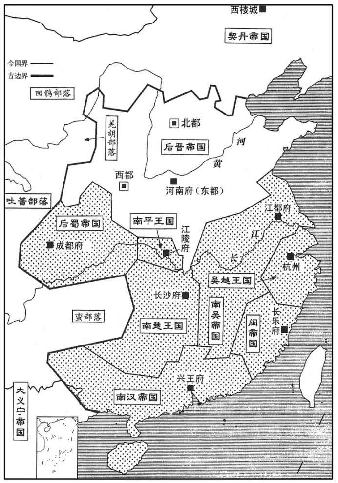
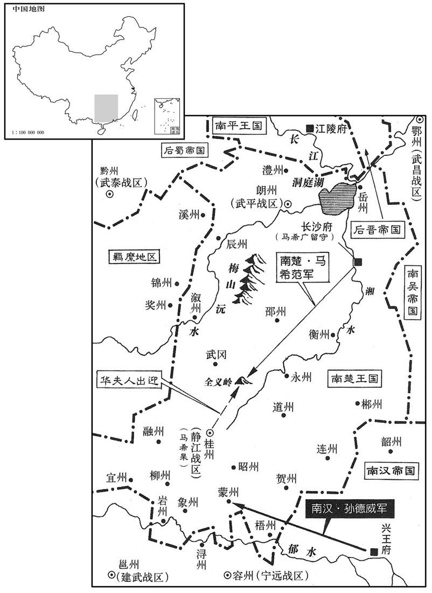
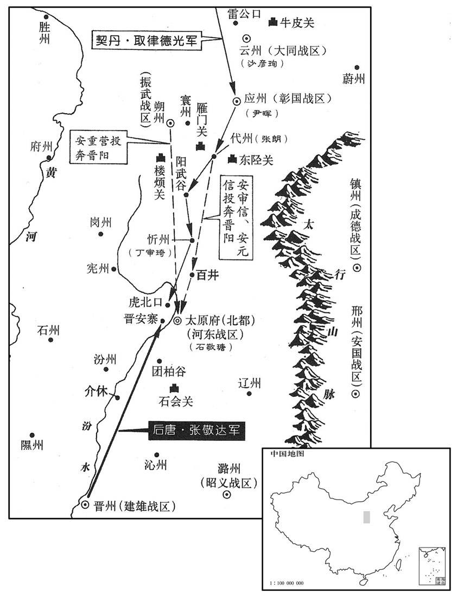
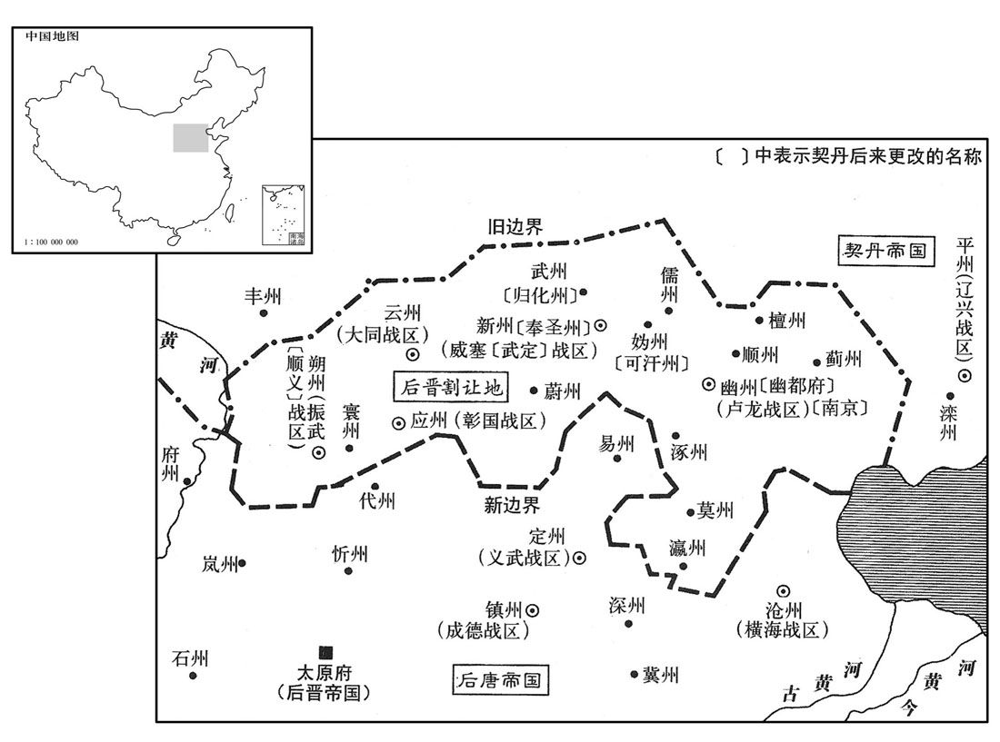
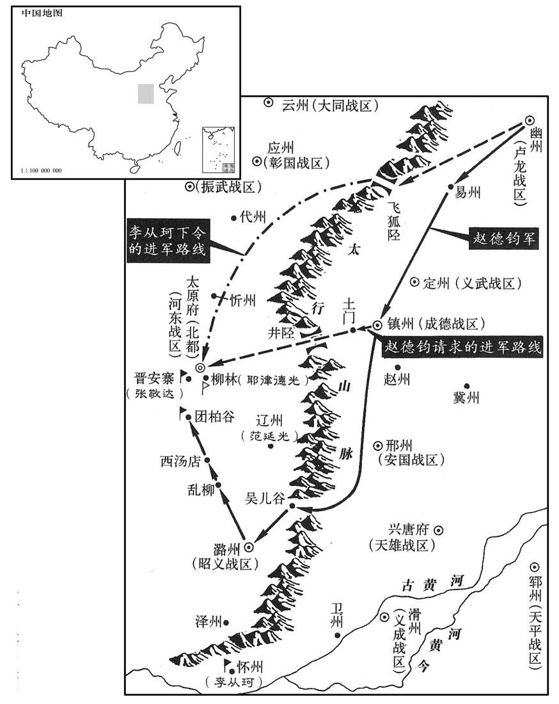
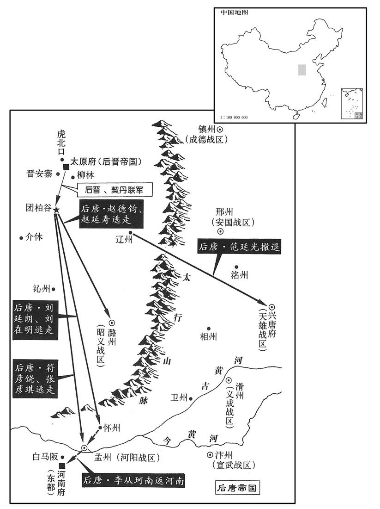
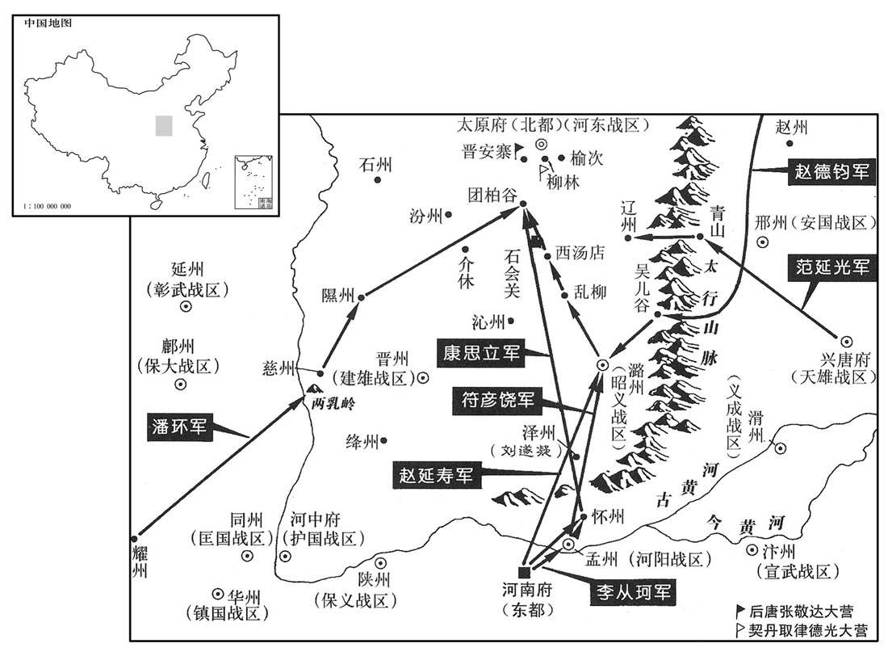
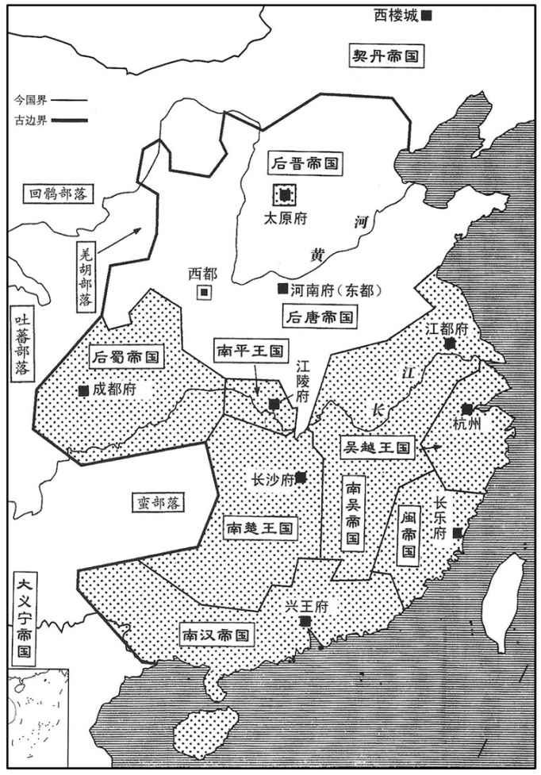
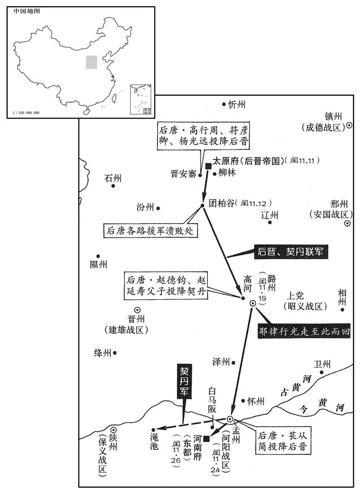

卷次与人物目录 / 卷280
资治通鉴 · 卷第二百八十【后晋纪一】
公元936年至公元936年 · 原文、白话与胡三省注
本页按胡注本编排保存全卷内容。白话采用本站所据译本，未可靠对应的内容另列说明；事件标题用于定位，并非原书文字。
本卷共86段原文，84段有译文对应，2段缺译或待核对。
卷第二百八十【后晋纪一】一炎兆涒滩（丙申），一年。
卷首原文与注释
〔石氏自代北从晋王起太原，既又以太原起事而得中原；太原治晋阳，契丹遂以晋命之，故国号为晋。〕
高祖圣文章武明德孝皇帝上之上〔讳敬瑭，姓石氏。其父臬捩鸡，本出于夷，自朱邪归唐，从朱邪入居阴山。其姓石，不知其得姓之始。五代会要曰：晋既得天下，祖卫大夫石碏。〕
公元936年 · 后晋高祖圣文章武明德孝皇帝天福元年
天福元年〔（丙申、九三六）是年十一月方改元即位。〕
上传原文的注释括号有异常，字符原样保留；无法可靠划分的段落默认全文显示。
本年事件索引（现代整理）
- 吴徐知诰设大元帅府分掌六部及盐铁事务
- 后唐末帝立皇子李重美为雍王
- 末帝千春节醉言石敬瑭可能叛乱加深敬瑭疑惧
- 后唐任马胤孙为宰相
- 石敬瑭收拢洛阳及各道财物运回晋阳
- 李崧吕琦建议归还契丹俘虏以换取和亲
- 末帝听信薛文遇反对放弃与契丹和亲计划
- 吴徐知诰任子徐景通为太尉副元帅
- 闽主王昶改元通文并立李春燕为皇后
- 楚王马希范因监军进言猜疑马希杲并调其镇朗州
- 高从诲劝徐知诰称帝
- 末帝决定将石敬瑭调镇郓州
- 末帝改授石敬瑭天平节度使宋审虔镇河东
- 张敬达奉命率军前往郓州接替石敬瑭
- 石敬瑭告知杨彦询自己起兵计划并保全其性命
- 皇甫立奏报石敬瑭反叛后唐削其官爵并发兵讨伐
- 张敬达率三万兵围晋阳安审信率部投奔石敬瑭
- 魏博军张令昭发动兵变驱逐刘延皓
- 吴徐景迁因病罢官由徐景遂代任
- 后唐任张令昭代理魏博军府并派范延光讨伐
- 石敬瑭诸子被捕后遭诛杀
- 楚王马希范自桂州返回长沙
- 云州内乱后尹晖执送桑迁赴洛阳处斩
- 范延光攻克魏州并诛张令昭及其党羽
- 张敬达部下张万迪率骑兵投奔石敬瑭其家族被诛
- 石敬瑭遣桑维翰向契丹称臣并承诺割让燕云诸州
- 后唐任范延光为天雄节度使李周镇宣武
- 契丹三千骑兵攻应州
- 张敬达修筑长围围困晋阳
- 后唐任董温琪为东北面副招讨使
- 吕琦赴河东犒军杨光远称愿纵契丹入境再战
- 契丹主耶律德光率五万骑南下声称三十万
- 契丹军抵晋阳附近击败后唐步军近万人
- 石敬瑭出城与契丹主会面
- 石敬瑭与契丹合围晋安寨后唐发兵救援
- 后唐末帝决定亲征晋安寨
- 末帝抵河阳后采纳卢文纪建议暂留并派赵延寿救援
- 龙敏建议立李赞华为契丹主分化契丹朝廷未获采纳
- 末帝惧怕石敬瑭进军拒绝亲自北行
- 后唐括马征兵扰乱民间
- 赵德钧假意救援晋安寨图谋趁乱夺取中原
- 后唐任刘浚为南汉宰相
- 后唐任赵德钧为诸道行营都统并增兵讨伐晋阳
- 吴主命徐知诰建立百官体系并以金陵为西都
- 刘景岩借募兵煽动杀死杨汉章后自任彰武留后
- 石敬瑭接受契丹册封建立后晋并割让燕云十六州
- 赵德钧逗留团柏谷求镇州以安置赵延寿
- 赵延寿以契丹赐物为名暗中求契丹立己为帝
- 桑维翰劝契丹守约拥立石敬瑭
- 龙敏提出率千骑突围救援晋安寨未能实施
- 丹州义军驱逐刺史唐承询
- 晋安寨被围数月粮尽杨光远杀张敬达后率军投降
- 张朗斩杀晋使吕琦劝丁审琦弃城南走
- 石敬瑭任赵莹桑维翰为宰相杨光远刘知远任军职
- 后晋高祖与契丹主约定南下后留侄石重贵镇守太原
- 赵延寿刘延朗退至怀州后唐末帝决定南返洛阳
- 洛阳百姓听闻后唐北军战败纷纷出逃
- 后唐末帝退至河阳并命将领分守南北城
- 赵德钧父子逃至潞州被契丹拘捕押往北方
- 赵德钧向述律太后献宝求恕遭当面斥责
- 契丹主与石敬瑭相约分兵南下并叮嘱善待功臣
- 高汉筠拒绝田承肇拥立并获释返回洛阳
- 符彦饶张彦琪劝末帝放弃河阳末帝退守洛阳
- 石敬瑭抵河阳苌从简率众迎降
- 后唐将领探查白马阪后因兵心涣散返回洛阳
- 末帝携太后皇后诸王登玄武楼自焚殉国
- 石敬瑭入洛阳安抚后唐军并恢复城中秩序
- 后晋帝擒捕张延朗追究其削减河东财赋旧怨
- 后晋大赦并处死刘延皓刘延朗张延朗等人
- 闽人听闻后唐灭亡后担忧闽主也将覆亡
- 石敬瑭在河阳为太相温及契丹军饯行
- 后晋追废李从珂为庶人
- 后晋任冯道兼门下侍郎同平章事
- 曹州指挥使石重立杀节度使郑阮并灭其族
- 后晋任姚顗为刑部尚书
- 后晋复任张希崇为朔方节度使以防契丹
- 董温琪部将秘琼杀其家人掠夺财物自称留后
- 同州小校门铎杀杨汉宾并劫掠州城
- 后晋追赠李赞华为燕王并送其灵柩归国
- 代州刺史张朗率部入朝归附后晋
- 后晋任卢文纪为吏部尚书，周瓖辞任三司使
- 后晋闻房知温去世，遣王建立巡抚青州
- 后晋改兴唐府为广晋府
- 卢文进闻石敬瑭由契丹拥立，弃镇投奔吴国
- 徐知诰劝李德诚、周本率众劝进，周本不情愿而从
- 高丽王建击败新罗、百济，东夷诸国归附
春，正月，吴徐知诰始建大元帅府，〔吴命徐知诰为大元帅，见上卷上年冬十月。〕以幕职分判吏、户、礼、兵、刑、工部及盐铁。
春季，正月，吴国徐知诰开始建立大元帅府，用他的幕僚分别执掌吏、户、礼、兵、邢、工六部及盐铁。
丁未，唐主立子重美为雍王。〔雍，于用翻。〕
丁未（十七日），后唐末帝李从珂册立他的儿子李重美为雍王。
癸丑，唐主以千春节置酒，〔唐主以生日为千春节。五代会要曰：帝以唐光启元年正月十三日生。既以晋元纪年，故书潞王。〕晋国长公主上寿毕，辞归晋阳。〔上，时掌翻。〕帝醉，曰：「何不且留，遽归，欲与石郎反邪！」石敬瑭闻之，益惧。
癸丑（二十三日），后唐末帝在自己的生日千春节置酒设宴，晋国长公主上寿祝贺完毕，告辞回晋阳。当时末帝已经醉了，说道：“为什么不多留些时候，忙着赶回去想帮助石郎造反哪！”石敬瑭听说后，更加害怕。
三月，丙午，以翰林学士、礼部侍郎马胤孙为中书侍郎、同平章事。胤孙性谨懦，中书事多凝滞，又罕接宾客，时人目为「三不开」，谓口、印、门也。
三月，丙午（十七日），末帝任用翰林学士、礼部侍郎马胤孙为中书侍郎、同平章事。马胤孙性格谨慎懦弱，中书省办事往往凝滞不能畅达，又很少接待宾客，时人说他们是口、印、门“三不开”。
石敬瑭尽收其货之在洛阳及诸道者归晋阳，托言以助军费，人皆知其有异志。唐主夜与近臣从容语曰：〔唐主好与近臣夜语见上卷上年。从，千容翻。〕「石郎于朕至亲，无可疑者；但流言不释，万一失欢，何以解之﹖」皆不对。
石敬瑭把他在洛阳及诸道的财货全部收拢送回到晋阳，托词说是帮助军费，人们都知道他是心怀异志。唐主在夜间同近臣从容平淡地说：“石郎是朕的至亲，没有什么可猜疑的；但是流言总是不断，万一和他失掉和好，怎么办为好？”众臣都不回答。
端明殿学士、给事中李崧退谓同僚吕琦曰：〔李崧时与吕琦同入直。〕「吾辈受恩深厚，岂得自同众人，一概观望邪！计将安出﹖」琦曰：「河东若有异谋，必结契丹为援。契丹母以赞华在中国，屡求和亲，但求萴刺等未获，故和未成耳。〔赞华，契丹主阿保机长子也。来降见二百七十七卷明宗长兴元年。求萴刺见三年。契丹母，谓述律后也。〕今诚归萴刺等与之和，岁以礼币约直十余万缗遗之，〔遗，唯季翻。〕彼必驩然承命。如此，则河东虽欲陆梁，无能为矣。」崧曰：「此吾志也。然钱榖皆出三司，宜更与张相谋之。」〔相，息亮翻。〕逐告张延朗，延朗曰：「如学士计，不惟可以制河东，亦省边费之什九，〔言什省其九。〕计无便于此者。若主上听从，但责办于老夫，请于库财之外捃拾以供之。」〔捃，居运翻。〕他夕，二人密言于帝，帝大喜，称其忠，二人私草遗契丹书以俟命。
端明殿学士、给事中李崧退下来对同僚吕琦说：“我们这些人受恩深厚，怎能把自己等同于众人，一概观望呢，现在能想些什么办法呢？”吕琦说：“河东那里如果有其他打算，必然要勾结契丹作援助。契丹太后因为他的长子李赞华降归中国，屡次要求和亲，但是，他们要求释放剌回去没有获得结果，所以和议未能成功。现在，如果真能把剌等放归与他们议和，每年用大约值十多万缗的礼物、钱财送给他们，他们必定会欢欣地答应。如果做到这样，那么河东虽然想蠢动，也无能为力了。”李崧说：“你说的与我的想法一样。然而钱、粮都要从三司支出，需要进一步同张丞相商量。”便把事情告诉了张延朗，张延朗说：“按学士的策划，不但可以制约河东，也可以节省戍边费用十分之九，计谋没有比这更好的了。如果主上听从了这个意见，只要责成老夫去办理就行了，可以在国家财库之外去搜集，以供其用。”又一个晚间，二人秘密地把这个办法陈述给末帝，末帝大喜，称道二人的忠心，二人私下草拟《遗契丹书》来等待命令。
久之，帝以其谋告枢密直学士薛文遇，文遇对曰：「以天子之尊，屈身奉夷狄，不亦辱乎！又，虏若循故事求尚公主，何以拒之﹖」〔唐自太宗以宗室女为公主下嫁诸蕃，谓之和蕃公主；其后回纥有功于中国，至屈帝女以女之。〕因诵戎昱昭君诗曰：「安危托妇人。」帝意逐变。〔戎昱，唐人也，能诗。汉元帝以王昭君嫁匈奴，后人怜之，竞为歌诗以言其事。〕一日，急召崧、琦至后楼，盛怒，责之曰：「卿辈皆知古今，欲佐人主致太平；今乃为谋如是！朕一女尚乳臭，卿欲弃之沙漠邪﹖且欲以养士之财输之虏庭，〔养士，谓养兵也。言其欲割养兵之财以和蕃。〕其意安在﹖」二人惧，汗流浃背，〔浃，即协翻。〕曰：「臣等志在竭愚以报国，非为虏计也，〔为，于伪翻。〕愿陛下察之。」拜谢无数，帝诟责不已。〔诟，古候翻，又许候翻。〕吕琦气竭，拜少止，帝曰：「吕琦强项，肯视朕为人主邪！」琦曰：「臣等为谋不臧，愿陛下治其罪，多拜何为！」〔治，直之翻。〕帝怒稍解，止其拜，各赐飜酒罢之，〔罢，使出就所舍。〕自是群臣不敢复言和亲之策。〔复，扶又翻。〕丁巳，以琦为御史中丞，盖疏之也。〔吕琦为唐主所亲事始二百七十七卷明宗长兴元年。御史中丞居外朝，不得入直禁中，故曰疏。
过了些时候，末帝把他们的谋略告诉了枢密直学士薛文遇，薛文遇回答说：“以天子的尊崇，屈身来侍奉夷狄野人，不是太耻辱了吗！再者，如果那胡虏按照过去的做法来谋求迎娶公主去和亲，用什么来拒绝他？”接着就诵读唐人戎昱的《昭君诗》说：“安危托妇人。”末帝的思想便改变了。一天，紧急召来李崧和吕琦到后楼，很恼火，责备他们说：“你们这些人都是懂得历史的，是想要辅佐人主获得天下太平的；怎么现在竟然出了这么个主意！朕有一个女儿还没有脱离乳臭，你们是要想把她抛弃到大沙漠吗？而且，要把国家养兵的财力输送给胡虏那里去，是什么居心？”李崧和吕琦很惶恐，汗流浃背，说道：“臣等的本意是要竭尽愚拙的想法用以报效国家，不是在替胡虏作打算，希望陛下明察。”二人无数次拜谢求恕，末帝指责不停。吕琦气力不继，叩拜稍有停顿，末帝说：“吕琦倔犟，你还肯把朕看做人主吗？”吕琦说：“我们谋事不善，愿请陛下治罪，多拜有什么用！”末帝的恼怒稍有缓解，制止他们的叩拜，每人赐给一杯酒，让他们出宫了，从此群臣不敢再提和亲的建议。丁巳（二十八日），末帝任用吕琦为御史中丞，以表示疏远他。
吴徐知诰以其子副都统景通为太尉、副元帅，都统判官宋齐丘、行军司马徐玠为元帅府左．右司马。
吴国徐知诰任用他的儿子副都统徐景通为太尉、副元帅，都统判官宋齐丘、行军司马徐为元帅府左、右司马。
闽主昶改元通文，立贤妃李氏为皇后，〔即李春燕也。〕尊皇太后曰太皇太后。
闽国主王昶把年号改为通文，册立贤妃李氏为皇后，尊上皇太后称为太皇太后。

静江节度使，同平章事马希杲有善政，监军裴仁煦谮之于楚王希范，〔煦，吁句翻。〕言其收众心，希范疑之。夏，四月，汉将孙德威侵蒙、桂二州，〔蒙州，本汉苍梧郡之荔浦县，随分荔浦置随化县，唐武德四年改为立山，于县置荔州，寻改为恭州；贞观八年改为蒙州，州东蒙山，山下有蒙水，人多姓蒙故也。宋熙宁五年废蒙州，以立山县属昭州。〕希范命其弟武安节度副使希广权知军府事，自将步骑五千如桂州。希杲惧，其母华夫人〔华，户化翻。〕逆希范于全义岭，〔全义岭在桂州全义县，即始安岭也。〕谢曰：「希杲为治无状，致寇戎入境，〔治，直吏翻。〕烦殿下亲涉险阻，皆妾之罪也。县削封邑，洒扫掖庭，以赎希杲罪。」〔洒，所买翻，又所卖翻。扫，素早翻，又素报翻。〕希范曰：「吾久不见希杲，闻其治行尤异，故来省之，无他也。」〔治，直吏翻。行，下孟翻。省，悉景翻。无他，言无他故也。〕汉兵自蒙州引去，徙希杲知朗州。〔为希范杀希杲张本。〕
静江节度使、同平章事马希杲有好的政声，监军裴仁煦向楚王马希范诽谤他，说他收买人心，马希范对他产生怀疑。夏季，四月，南汉将领孙德威侵犯蒙州和桂州，马希范命令他的弟弟武安节度副使马希广暂时主持军府事，自己带领步兵、骑兵五千人赴桂州。马希杲害怕，他的母亲华夫人到全义岭远迎马希范，谢罪说：“希杲治理政事不得法，招致敌兵入境，烦劳殿下亲自跋涉险阻之地，都是我的罪过。我们愿意削去封邑，去当洒扫庭院的人，用来赎偿希杲的罪过。”马希范说：“我很久没有见到希杲，听说他治理成绩优异，所以来看看，没有别的意思。”南汉兵从蒙州退走，便把马希杲调迁到朗州。

高从诲遣使奉笺于徐知诰，劝即帝位。〔高从诲以区区三州介居唐、吴、蜀之间，利其赏赐，所向称臣诸国谓之「高赖子」，其有以也夫。〕
荆南高从诲遣派使者送信给徐知诰，劝他即皇帝之位。
初，石敬瑭欲尝唐主之意，累表自陈羸疾，〔羸，伦为翻。〕乞解兵柄，移他镇；〔兵柄，谓北面马步军都总管之任。〕帝与报政议从其请，移镇郓州。房暠、李崧、吕琦等皆力谏，以为不可，帝犹豫久之。
过去，石敬瑭想试探末帝的意图，多次上表陈诉身体羸弱，请求解除他的兵权，调迁到别的镇所；末帝与执政大臣商议后答应了他的请求，把他移镇郓州。房、李崧、吕琦等人都极力谏劝，认为不能这样做，末帝犹疑了很长时间。
五月，庚寅夜，李崧请急在外，〔请急，请告也。〕薛文遇独直，帝与之议河东事，文遇曰：「谚有之：『当道筑室，三年不成。』兹事断自圣志；〔谚，鱼变翻。断，丁乱翻。〕群臣各为身谋，安肯尽言！以臣观之，河东移亦反，不移亦反，在旦暮耳，不若先事图之。」〔先，悉荐翻。河东事情，凡在清泰朝野之人，谁不知者！其所以重于言，重于发，惧言之则发大难之端在己而无以善其后耳。清泰主郁郁于此久矣，薛文遇一言当心，逐决然而不顾。〕先是，术者言国家今应得贤佐，出奇谋，定天下，〔先，悉荐翻。〕帝意文遇当之，闻其言，大喜，曰：「卿言殊豁吾意，成败吾决行之」即为除目，付学士院使草制。〔御笔亲除付外行者谓之除目，其经宰相奏拟而行者亦谓之除目。〕辛卯，以敬瑭为天平节度使，以马军都指揇使、河阳节度使宋审虔为河东节度使。〔宋审虔从唐主起于凤翔，故欲以之代敬瑭。〕制出，两班闻呼敬瑭名，相顾失色。〔两班，谓文武官班。〕
五月，庚寅（初二）夜间，李崧因有急事请假在外，薛文遇独自承值夜班，末帝同他议论河东的事情，薛文遇说：“俗谚说：‘在道路当中盖房，三年也盖不成’，这种事情只能由主上的意志进行决断。群臣各为自身利害作打算，怎么肯什么话都说！以臣看来，河东的事，移镇也反，不移也要反，只是时间早晚而已，不如走在前头，先把他解决了。”以前，术士说国家今年应该得到贤人辅佐，提出奇谋，安定天下，末帝以为这个人当由薛文遇来应验，听到他的话，大为高兴，说道：“爱卿的话，很使我心意豁然开朗，不论成功还是失败，我决心施行。”立即命薛文遇写出封授官职的拟议，交付学士院草拟任命制书，辛卯（初三），任命石敬瑭为天平节度使，任用马军都指挥使、河阳节度使宋审虔为河东节度使。制令一出，文武两班听到呼叫石敬瑭的名字，相顾失色。
甲午，以建雄节度使张敬达为西北蕃汉马步都部署，趣敬瑭之郓州。〔趣，读曰促。天平节度治郓州。郓，音运。〕敬瑭疑惧，谋于将佐曰：「吾之再来河东也，主上面许终身不除代；〔唐主此言当在即位之初，敬瑭入朝遣还镇时也。〕今忽有是命，得非如今年千春节与公主所言乎﹖我不兴乱，朝廷发之，安能束手死于道路乎！今且发表称疾以观其意，若其宽我，我当事之；若加兵于我，我则改图耳。」〔观敬瑭此言，则求援于契丹者本心先定之计也，桑维翰之言正会其意耳。〕幕僚段希尧极言拒之，敬瑭以其朴直，不责也。节度判官华阴赵莹劝敬瑭赴郓州；观察判官平遥薛融曰：「融书生，不习军旅。」都押牙刘知远曰：「明公久将兵，得士卒心；今据形胜之地，士马精强，若称兵传檄，〔称，举也。〕帝业可成，奈何以一纸制书自投虎口乎！」掌书记洛阳桑维翰曰：「主上初即位，明公入朝，主上岂不知蛟龙不可纵之深渊邪﹖〔古语有之：鱼不可脱于渊，神龙失势，与蚯蚓同。〕然卒以河东复授公，〔卒，子恤翻。复，扶又翻。〕此乃天意假公以利器。明宗遗爱在人，主上以庶孽代之，群情不附。公明宗之爱伲，今主上以反逆见待，此非首谢可免，〔首，式又翻。〕但力为自全之计。契丹〔【章：十二行本「丹」下有「主」字；乙十一行本同。】〕素与明宗约为兄弟，今部落近在云、应，〔契丹牙帐自明宗长兴三年屯捺刺泊。〕公诚能推心屈节事之，万一有急，朝呼夕至，何患无成。」敬瑭意逐决。
甲午（初六），末帝任用建雄节度使张敬达为西北蕃汉马步都部署，催促石敬瑭速赴郓州。石敬瑭很是疑惧，便和他的将佐计议说：“我第二次来河东时，主上曾当面答应我终身不再派别人来替换我；现在又忽然有了这样的命令，莫不是像今年过千春节时，主上同公主所讲的那样吗？我如果不造反，朝廷要先发制人，怎么能束手被擒，死于道路之间呢！今天我要上表说有病，来观察朝廷对我的意向，如果他对我宽容，我就臣事他；如果他对我用兵，那我就要另作打算了。”幕僚段希尧极力反对，石敬瑭因为他为人直率，并不责怪他。节度判官华阴人赵莹劝石敬瑭去郓州赴任；观察判官平遥人薛融说：“我是个书生，不懂得遣兵作战的事。”都押牙刘知远说：“明公您长期统率兵将，很能受到士兵的拥护；现在正占据着有利的地势，将士和马步军队都很精锐强悍，如果起兵，传发檄文宣示各道，可以完成统一国家的帝王大业，怎么能只为一道朝廷制令便自投虎口呢！”掌书记洛阳人桑维翰说：“主上当初即位时，明公您入京朝贺，主上岂能不懂得蛟龙不可纵之归渊的道理？然而到底还是把河东再次交给您，这正是天意要借一把快刀给您。先帝明宗的遗爱留给了后人，主上却用旁支的庶子取代大位，群情是不依附于他的。您是明宗的爱婿，可是现在主上却把您当作叛逆看待，这就不是仅仅靠表示低头服从所能取得宽免，只能努力为保全自己想办法了。契丹向来同明宗协约做兄弟之邦，现在，他们的部落近在云州、应州，您如果真能推心置腹地曲意讨好他们，万一有了急变之事，早上叫他晚上就能来到，还担心什么事不能办成吗？”石敬瑭于是便下了造反的决心。
先是，朝廷疑敬瑭，〔先，悉荐翻。〕以羽林将军宝鼎杨彦询为北京副留守，〔宝鼎县属河中府，汉之汾阴县也。唐玄宗开元二十一年祀汾阴，获宝鼎，由是更名。九域志：宋大中祥符四年改宝鼎为荣河县，在河中府北一百里。〕敬瑭将举事，亦以情告之。彦询曰：「不知河东兵粮几何，能敌朝廷乎﹖」左右请杀彦询，敬瑭曰：「惟副使一人我自保之，汝辈勿言也。」〔按薛史称杨彦询为人沈厚，当以此得全。〕
过去，朝廷猜疑石敬瑭，任用羽林将军宝鼎人杨彦询为北京太原的副留守，石敬瑭将要起兵造反，也把情况告诉了他。杨彦询说：“不知河东现在有多少兵士和粮秣，能够敌得过朝廷吗？”石敬瑭左右的人请求杀了杨彦询，石敬瑭说：“只有副使一个人，我亲自保证他没有事，你们大家就不必再说了。”
戊戌，昭义节度使皇甫立奏敬瑭反。〔并、潞二镇接境，故知其事而先奏之。〕敬瑭表：「帝养子，不应承祀，请传位许王。」〔许王从益，明宗之子也。〕帝手裂其表抵地，以诏答之曰：「卿于鄂王固非疏远，卫州之事，天下皆知；〔谓敬瑭尽杀闵帝从骑，独置帝于卫州也。事见上卷清泰元年。鄂王即谓闵帝。潞王入立，以太后令降闵帝为鄂王。〕许王之言，何人肯信！」制削夺敬瑭官爵。乙巳，以张敬达兼太原四面排陈使，〔陈，读曰阵；下同。〕河阳节度使张彦琪为马步军都指挥使，以安国节度使安审琦为马军都指挥使，以保义节度使相里金为步军都指挥使，以右监门上将军武翰为壕寨使。〔相，息亮翻。监，古衔翻。〕丙午，以张敬达为太原四面兵马都部署，以义武节度使杨光远为副部署。〔为杨光远杀张敬达降晋张本。〕丁未，又以张敬达知太原行府事，以前彰武节度使高行周为太原四面招抚、排陈等使。光远既行，定州军乱，牙将千乘方太讨平之。〔汉置千乘国，后改乐安郡，隋废乐安郡置千乘县，唐属青州。九域志：千乘县在青州北八十里。乘，绳证翻。〕
戊戍（初十），昭义节度使皇甫立奏报石敬瑭叛乱。石敬瑭上表称：“皇帝是养子，不应该继位，请把皇位传给许王李从益。”末帝把石敬瑭的表章撕碎扔在地上，用诏书回答他说：“你同鄂王李从厚本来并不疏远，卫州的事情，天下人都知道；许王的话，谁肯听他！”壬寅（十四日），末帝下制令，削夺了石敬瑭的官爵。乙巳（十七日），末帝任用张敬达兼太原四面排阵使，河阳节度使张彦琪为马步军都指挥使，作用安国节度使安审琦为马军都指挥使，任用保义节度使相里金为步军都指挥使，任用右监门上将军武廷翰为壕寨使。丙午（十八日），任命张敬达为太原四面兵马都部署，任命义武节度使杨光远为副部署。丁未（十九日），又任命张敬达主持太原行府事，任命前彰武节度使高行周为太原四面招抚、排阵等使。杨光远离任后，定州军作乱，牙将千乘县人方太讨伐平定了叛乱。

张敬达将兵三万营于晋安乡，〔晋安乡在晋阳城南。薛史，晋安寨在晋祠南。〕戊申，敬达奏西北先锋马军都指挥使安审信叛奔晋阳。审信，金全之弟子也，敬瑭与之有旧。〔安氏群从与石敬瑭本皆代北人。〕先是，雄义都指挥使马邑安元信〔先，悉荐翻。马邑县属朔州。〕将所部六百余人戍代州，代州刺史张朗善遇之。元信密说朗曰：「吾观石令公长者，〔说，式芮翻。石敬瑭加中书令，故称为令公。长，知两翻。〕举事必成；公何不潜遣人通意，可以自全。」朗不从，由是互相猜忌。元信谋杀朗，不克，帅其众奔审信，审信遂帅麾下数百骑与元信掠百井奔晋阳。〔帅，读曰率。〕敬瑭谓元信曰：「汝见何利害，舍强而归弱﹖」对曰：「元信非知星识气，顾以人事决之耳。夫帝王所以御天下，莫重于信。今主上失大信于令公，亲而贵者且不自保，〔石敬瑭身为帝伲，可谓亲矣；官为中书令，建节总兵，专制北面，可谓贵矣。〕况疏贱乎！甚亡可翘足而待，何强之有！」敬瑭悦，委以军事。振武西北巡检使安重荣戍代北，〔欧史，安重荣为振武巡边指挥使。〕帅步骑五百奔晋阳。〔帅，读曰率；下同。〕重荣，朔州人也。以宋审虔为宁国节度使、充侍卫马军都指挥使。〔石敬瑭既不受代，故使宋审虔领节掌宿卫。审虔，唐主镇凤翔时牙将。〕
张敬达统兵三万在晋安乡安营扎寨，戊申（二十日），张敬达奏报西北先锋马军都指挥使安审信叛奔晋阳，安审信是安金全的侄子，与石敬瑭旧有往来。过去，雄义都指挥使马邑人安元信带领所部六百余人戍守代州，代州刺史张朗待他很好。安元信暗中劝说张朗说：“我看石令公是个长者，他举兵造反，必能成功；您何不暗地派人去表达心意，可以保全自己。”张朗不听，从此二人互相猜忌。安元信企图杀了张朗，没有成功，便带领自己的部属兵众投奔安审信，安审信便率领他指挥下的几百骑兵与安元信会合，抢掠百井后，投奔晋阳。石敬瑭对安元信说：“你看出什么利害，竟然舍强而归弱？”回答说：“我并不会观星识气，只是用人事的判断来作决定而已。谈起帝王之所以能够临御天下，没有比信誉更重要的了。现在，主上对令公您失去大信，至亲而且尊贵的人尚且不能自保，何况疏远而卑微的人哪！他的灭亡可以翘着脚等待，他算什么强啊！”石敬瑭高兴，让他掌管军事。振武西北巡检使安重荣戌守代北，也率领步兵和骑兵五百人投奔晋阳。安重荣是朔州人。朝廷任命宋审虔为宁国节度使、充当侍卫马军都指挥使。
天雄节度使刘延皓恃后族之势，骄纵，〔刘延皓，唐主后弟。〕夺人财产，减将士给赐，宴饮无度。捧圣都虞候张令昭因众心怨怒，谋以魏博应河东，癸丑未明，帅众攻牙城，克之；延皓脱身走，乱兵大掠。令昭奏：「延皓失于抚御，以致军乱；臣以抚安士卒，权领军府，〔「臣以」之「以」当作「已」。〕乞赐旌节！」延皓至洛阳，唐主怒，命远贬；皇后为之请，〔为，于伪翻。考异曰：废帝实录：「延皓，皇后之侄。」按薛史、唐余录、欧阳史皆云延皓，后之弟，应州人也。延朗，宋州虞城人也。独废帝实录云后侄，今不取。〕六月，庚申，止削延皓官爵，归私第。
天雄节度使刘延皓依恃皇后家族的势力，很骄纵，侵占别人的财产，扣减将士的赏赐，宴会饮酒没有节制。捧圣都虞候张令昭因为众心怨恨，企图用魏博来响应河东造反，癸丑（二十五日）天未亮，率领兵众攻打主将所居的牙城，攻了下来；刘延皓脱自身逃去，乱兵大肆抢掠。张令昭上奏：“刘延皓
抚给驾御不当，以致军人作乱；臣为了要抚恤安慰士兵，暂时领管军府，请求朝廷赐给旌节！”刘延皓逃回洛阳，末帝发怒，下令把他贬到远方，皇后为他说情，六月，庚申（初三），只是削去刘延皓的官爵，让他回自己的宅第。
辛酉，吴太保、同平章事徐景迁以疾罢，以其弟景逐代为门下侍郎、参政事。
辛酉（初四），吴国太保、同平章事徐景迁因为患病罢官，任用他的弟弟徐景遂代替他做门下侍郎、参政事。
癸亥，唐主以张令昭为右千牛卫将军、权知天雄军府事。令昭以调发未集，〔调，徒钓翻。且受新命。寻有诏徙齐州防御使，令昭托以士卒所留，实俟河东之成败。唐主遣使谕之，令昭杀使者。甲戌，以宣武节度使兼中书令范延光为天雄四面行营招讨使、知魏博行府事，〔「魏博」恐当作「魏州」。〕以张敬达充太原四面招讨使，以杨光远为副使。丙子，以西京留守李周为天雄军四面行营副招讨使。
癸亥（初六），后唐末帝任用张令昭为右千牛卫将军，暂时主持天雄军府事。张令昭因为调发人马没有会集，暂且接受新的任命。不久，又有诏书命令他调任齐州防御使，张令昭托词说被士兵所留滞，实际上是等待观察河东起兵之成败。后唐末帝派遣使者告谕他，张令昭把使者杀了。甲戍（十七日），末帝任命宣武节度使兼中书令范延光为天雄四面行营招讨使、主持魏博行府事，任命张敬达充当太原四面招讨使，任用杨光远为副使。丙子（十九日），任命西京留守李周为天雄军四面行营副招讨使。
石敬瑭之子右卫上将军重殷、皇城副使重裔闻敬瑭举兵，匿于民间井中。弟沂州都指挥使敬德杀其妻女而逃，寻捕得，死狱中，从弟彰圣都指挥使敬威自杀。秋，七月戊子，获重殷、重裔，诛之，〔重，直龙翻。从，才用翻。考异曰：薛史：「七月己丑，诛右卫上将军石重英、皇城副使石重裔，皆敬瑭之子也。」废帝实录云「石讳泡男尚食使重乂，供奉官重英。」与薛史不同。按重乂敬瑭子，即位后为张从宾所杀，实录误也。广本「英」作「殷」，今从之。〕并族所匿之家。
石敬瑭的儿子右卫上将军石重殷、皇城副使石重裔听说石敬瑭起兵造反，躲藏在民间市井中。石敬瑭的弟弟沂州都指挥使石敬德杀了自己的妻子、女儿而后逃走，不久，被捕获，死于狱中。叔伯弟弟彰圣都指挥使石敬威自杀。秋季，七月，戊子（初二），抓获了石重殷和石重裔，诛杀了他们，并把藏匿他们的人家全族杀害。
庚寅，楚王希范自桂州北还。〔四月至桂州，七月方还。还，从宣翻，又如字。
本段缺少可靠对应白话，原文完整保留；未使用生成译文。
云州步军指挥使桑迁奏应州节度使尹晖逐云州节沙彦珣，收其兵应河东。丁酉，彦珣表迁谋叛应河东，引兵围子城。彦珣犯围走出西山，据雷公口，明日，收兵入城击乱兵，迁败走，军城复安。是日，尹晖执迁送洛阳，斩之。
云州步军指挥使桑迁上奏：应州节度使尹晖驱逐云州节度使沙彦，接收了他的兵马，响应河东造反。丁酉（十一日），沙彦上表奏称桑迁谋反响应河东，并且率领兵马包围了子城。沙彦突破包围走出西山，占据雷公口，第二天，收集兵士入城袭击乱兵，桑迁败走，军城恢复安定。这一天，尹晖抓住桑迁把他押送洛阳，朝廷把他斩了。
丁未，范延光拔魏州，斩张令昭。诏悉诛其党七指挥。
丁未（二十一日），范延光攻取了魏州，斩杀了张令昭。朝廷下诏：把他的党羽七个指挥都诛除了。
张敬达发怀州彰圣军戍虎北口，〔虎北口在汾水北。彰圣军本洛城屯卫兵也，先是分屯怀州，又自怀州发赴张敬达军前，敬达又发之戍虎北口。〕其指挥使张万迪将五百骑奔河东，丙辰，诏尽诛其家。
张敬达发动怀州彰圣军戍守在虎北口，该军指挥使张万迪带领五百骑投奔河东，丙辰（三十日），朝廷下诏：把他的家属全部诛杀。
石敬瑭遣间使求救于契丹，〔间，古苋翻。使，疏吏翻。时张敬达在代州，云、应两镇亦不从敬瑭，故遣使从间道趋契丹帐。〕令桑维翰草表称臣于契丹主，且请以父礼事之，约事捷之日，割卢龙一道及鴈门关以北诸州与之。刘知远谏曰：「称臣可矣，以父事之太过。厚以金帛赂之，自足致其兵，不必许以土田，恐异日大为中国之患，悔之无及。」敬瑭不从。〔他日卒如刘知远之言。为契丹入中国张本。〕表至契丹，契丹主大喜，〔喜中国有衅之可乘也。〕白其母曰：「儿比梦石郎遣使来，〔其母即述律太后。比，毗至翻，近也。〕今果然，此天意也。」〔自是之后，辽灭晋，金破宋，（原缺十六字。）今之疆理，西越益、宁，南尽交、广，至于海外，皆石敬瑭捐割关隘以启之也，其果天意乎！〕乃为复书，许俟仲秋倾国赴援。〔俟秋高马肥而后进。〕
石敬瑭派使者从僻路求救于契丹，让桑维翰草写表章向契丹主称臣，并且请求用对待父亲的礼节来侍奉他，约定事情成功之日，划割卢龙一道及雁门关以北诸州给契丹。刘知远劝谏他说：“称臣就可以了，用父亲的礼节对待他就太过份了。用丰厚的金银财宝贿赂他，自然是足以促使他发兵，不必许诺割给他土田，恐怕那样以后要成中国的大患，后悔就来不及了。”石敬瑭不听。表章送到契丹，契丹国主耶律德光非常高兴，告诉他的母亲述律太后说：“孩儿最近梦见石郎派遣使者来，现在果然来了，这真是天意啊。”便向石敬瑭写了回信，答应等到仲秋时节，发动全国人马来支援他。
八月，己未，以范延光为天雄节度使，李周为宣武节度使、同平章事。
八月，己未（初三），末帝任用范延光为天雄节度使，李周为宣武节度使、同平章事。
癸亥，应州言契丹三千骑攻城。
癸亥（初七），应州奏报：契丹三千骑兵进攻州城。
张敬达筑长围以攻晋阳。石敬瑭以刘知远为马步都指挥使，安重荣、张万迪降兵皆隶焉。知远用法无私，抚之如一，由是人无贰心。敬瑭亲乘城，坐卧矢石下，知远曰：「观敬达辈高垒深堑，欲为持久之计，无他奇策，不足虑也。愿明公四出间使，〔间，古苋翻。使，疏吏翻。〕经略外事。守城至易，知远独能办之。」〔易，以豉翻。用兵之计，攻城最下。以敬瑭、知远之守，又有契丹之援，而敬达却以持久制之，直其败也。〕敬瑭执知远手，抚其背而赏之。
张敬达设置了很长的包围工事来攻打晋阳。石敬瑭任用刘知远为马步都指挥使，把安重荣、张万迪的降兵都隶属于他。刘知远以法办事，没有私弊，对军民抚恤一视同仁，因此人都没有二心。石敬瑭亲自登城视察部属兵卒，坐卧在敌人的矢石投射之下。刘知远说：“察看张敬达这些人筑设高垒深沟，想作持久打算，他们没有其他好的办法，是不足为虑的。请您向各方派出走僻路的使者，经办对外事务。守城的事很容易，我知远一个人就能独力办理。”石敬瑭拉着刘知远的手，抚拍他的肩背而称赞他。
戊寅，以成德节度使董温琪为东北面副招讨使，以佐卢龙节度使赵德钧。
戊寅（二十二日），后唐朝廷任用成德节度使董温琪为东北面副招讨使，用来帮助卢龙节度使赵德钧。
唐主使端明殿学士吕琦至河东行营犒军，〔犒，苦到翻。〕杨光远谓琦曰：「愿附奏陛下，幸宽宵旰。〔旰，古案翻。〕贼若无援，旦夕当平；若引契丹，当纵之令入，可一战破也。」〔杨光远之计，狃王晏球定州之胜，欲纵之令入而与之战，殊不知战无常胜，而关隘不可不扼也。寻而契丹径入，唐兵一战而败，遂为所困矣。〕帝甚悦。帝闻契丹许石敬瑭以仲秋赴援，屡督张敬达急攻晋阳，不能下。每有营构，多值风雨，长围复为水潦所坏，竟不能合。〔复，扶又翻。坏，音怪。史言天方相晋，张敬达无所施其力。〕晋阳城中日窘，粮储浸乏。〔若契丹之援不至，晋不能支矣。〕
后唐主派出端明殿学士吕琦到河东行营犒劳军队，杨光远对吕琦说：“请您附带奏告陛下，请主上稍微减少昼夜操劳。贼兵如果没有援兵，用不多天就可以平定；如果他勾结契丹来犯，自当放他进来，一次战斗就能把他打败。”末帝闻奏很是高兴。末帝听说契丹答应石敬瑭在仲秋时节发兵来支援他，几次督促张敬达紧急攻打晋阳，但不能攻下。每当有所营建构筑工事，往往遇到风雨天气，很长的包围工事又被水浸所破坏，竟然接合不拢。晋阳城中日益窘迫，粮食储备因浸泡而缺乏。
九月，契丹主将五万骑，号三十万，自扬武谷而南，〔扬武谷在代州崞县。薛史：阳武谷在朔州南。考异曰：代州今有杨武寨，其北有长城岭、圣佛谷。今从汉高祖实录作「扬武」。〕旌旗不绍五十余里。代州刺史张朗、忻州刺史丁审琦婴城自守，〔九域志：代州南至忻州一百六十里；忻州南至太原一百四十里。〕虏骑过城下，亦不诱胁。〔诱，音酉。〕审琦，洺州人也。
九月，契丹主耶律德光统领五万骑兵，号称三十万，从代州扬武谷向南进发，旌旗连绵不断达五十余里。代州刺史张朗、忻州刺史丁审琦绕城自守，敌人骑兵经过城下时，也不诱降挟胁他。丁审琦是州人。
辛丑，契丹主至晋阳，陈于汾北之虎北口。〔陈，读曰阵；下同。考异曰：按幽州北山口名虎北口，亦名古北口。此在太原，而云陈于虎北口，又云归虎北口，盖太原城侧别有地名虎北口也。〕先遣人谓敬瑭曰：「吾欲今日既破贼可乎﹖」敬瑭遣人驰告曰：「南军甚厚，不可轻，〔唐兵自南来攻晋阳，故谓之南军。〕请俟明日议战未晚也。」使者未至，契丹已与唐骑将高行周、符彦卿合战，敬瑭乃遣刘知远出兵助欴。张敬达、杨光远、安审琦以步兵陈于城西北山下，契丹遣轻骑三千，不被甲，直犯其陈。唐兵见其羸，争逐之，至汾曲，〔被，皮义翻。羸，伦为翻。汾曲，汾水之曲也。〕契丹涉水而去。唐兵循岸而进，契丹伏兵自东北起，冲唐兵断而为二，步兵在北者多为契丹所杀，骑兵在南者引归晋安寨。契丹纵兵乘之，唐兵大败，步兵死者近万人，〔近，其靳翻。〕骑兵独全。敬达等收余众保晋安，契丹亦引兵归虎北口。敬瑭得唐降兵千余人，刘知远劝敬瑭尽杀之。〔唐兵虽败，其众尚强，刘知远惧降兵复叛归，故劝杀之。〕
辛丑（十五日），契丹主到达晋阳，把兵马布列在汾北的虎北口。先派人对石敬瑭说：“我打算今天攻打贼兵，行不行？”石敬瑭派人驰奔告诉他们说：“南军力量很雄厚，不可以轻视，请等到明天议论好如何开战也不晚。”使者还未到达契丹军营，契丹兵已经同后唐骑将高行周、符彦卿打了起来，石敬瑭便派刘知远出兵帮助他们。张敬达、杨光远、安审琦用步兵列阵在城西北山下，契丹派轻骑兵三千人，不披铠甲，直奔唐兵阵列。唐兵看到契丹兵单薄，争相驱赶，到了汾水之曲，契丹兵涉水而去。唐兵沿着河岸向北进取，契丹伏兵从东北涌起，冲击唐兵，把唐兵截为两段，在北面的步兵大多被契丹所杀，在南面的骑兵引退回到晋安营寨。契丹放开兵马乘乱攻击，唐兵大败，步兵死亡近万人，骑兵却保全了。张敬达等收集余众退保晋安，契丹也率领其兵返回虎北口。石敬瑭俘获后唐降兵一千余人，刘知远劝石敬瑭把他们都杀了。
是夕，敬瑭出北门，〔出晋阳城北门也。〕见契丹主。契丹主执敬瑭手，恨相见之晚。〔以前此未识面，故然，亦必石敬瑭之气貌有以耸其瞻视也。〕敬瑭问曰：「皇帝远来，士马疲倦，遽与唐战而大胜，何也﹖」契丹主曰：「始吾自北来，谓唐必断鴈门诸路，〔断，音短。鴈门有东陉、西陉之险，崞县有阳武、石门之隘。〕伏兵险要，则吾不可得进矣。〔使张敬达等果知出此，岂有晋安之困哉。〕使人侦视，皆无之，〔侦，丑郑翻。〕吾是以长驱深入，知大事必济也。兵既相接，我气方锐，彼气方沮，若不乘此急击之，〔言当乘初至之锐而用其锋也。〕旷日持久，则胜负未可知矣。此吾所以亟战而胜，不可以劳逸常理论也。」敬瑭甚叹伏。
这天晚上，石敬瑭出北门，会见契丹主。契丹主握住石敬瑭的手，只恨相见晚了。石敬瑭问道：“皇帝远道而来，兵马疲倦，急切同唐兵作战而取得大胜，这是什么原因？”契丹主说：“开始我从北面过来，以为唐兵必然要切断雁门的各条道路，埋伏兵众在险要之地，那样我就不能顺利前进了。我使人侦察，发现断路和伏险都没有，这样，我才得以长驱深入，知道大事必然成功了。兵马相接以后，我方气势正锐盛，彼方气势正沮丧，如果不乘此时急速攻击他，旷日持久，那谁胜谁负就不可预料了。这就是我之所以速战而胜的道理，不能用谁劳谁逸的通常的道理来衡量了。”石敬瑭很是叹服。
壬寅，敬瑭引兵会契丹围晋安寨，置营于晋安之南，长百余里，厚五十里，多设铃索吠犬，人跬步不能过。〔长，直亮翻。厚，户茂翻。索，昔各翻。吠，房废翻。跬，犬橤翻，半步也。又司马法曰：一举足曰跬。跬，三尺也。〕敬达等士卒犹五万人，马万匹，四顾无所之。〔兵法：置之死地而后生。若张敬达等能于围落未合之时，勉谕将士，竭力致死决战，胜负未可知也。〕甲辰，敬达遣使告败于唐，自是声问不复通。〔复，扶又翻。〕唐主大惧，遣彰圣都指挥使符彦饶将洛阳步骑兵屯河阳，诏天雄节度使兼中书令范延光将魏州兵二万由青山趣榆次，〔青山，既邢州青山口也。趣，七喻翻。〕卢龙节度使、东北面招讨使兼中书令北平王赵德钧将幽州兵〔【章：十二行本「兵」下有「由飞狐」三字；乙十一行本同；孔本同；退斋校同。】〕出契丹军后，〔欲使赵德钧自飞狐道出代州，以断契丹之后。〕耀州防御使潘环闸合西路戍兵，〔「闸」，与「纠」同。说文：绳三合为闸。故凡合集兵众者谓之闸合、闸集。西路戍兵，谓蒲、潼以西诸道戍兵也。〕由晋、绛两乳岭出慈、隰，共救晋安寨。契丹主移帐于柳林，〔柳林当在晋安寨南。〕游骑过石会关，不见唐兵。
壬寅（十六日），石敬瑭率领兵马会合契丹兵马包围了晋安寨，在晋安的南面设置营地，长一百多里，宽五十里，密布带铃索的吠犬，人们连半步也不能过去。此时张敬达等的士兵尚有五万人，马有万匹，四面张顾，不知往哪里去好。甲辰（十八日），张敬达派出使者向后唐朝廷报告打了败仗，此后便没有再通音讯了。唐主极为恐惧，派遣彰圣都指挥使符彦饶统领洛阳步兵、骑兵屯扎在河阳，末帝下诏命令天雄节度使兼中书令范延光统领魏州兵两万从邢州青山奔赴榆次，卢龙节度使、东北面招讨使兼中书令北平王赵德钧统领幽州兵从契丹军阵之后出击，耀州防御使潘环纠合西路守戍的兵士从晋州、降州间的两乳岭出兵向慈州、隰州共同营救晋安寨。契丹主把军帐移到柳林，流动的骑兵过了石会关，还没有遇到唐兵。
丁未，唐主下诏亲征。雍王重美曰：〔雍，于用翻。〕「陛下目疾未平，未可远涉风沙；臣虽童稚，愿代陛下北行。」帝意本不欲行，闻之，颇悦。张延朗、刘延皓及宣徽南院使刘延朗皆劝帝行，帝不得已，戊申，发洛阳，谓卢文纪曰：「朕雅闻卿有相业，故排众议首用卿，〔相，息亮翻。卢文纪，唐主清泰元年四月既位，七月相卢文纪。〕今祸难如此，〔难，乃旦翻。〕卿嘉谋皆安在乎﹖」文纪但拜谢，不能对。己酉，遣刘延朗监侍卫步军都指挥使符彦饶军赴潞州，为大军后援。〔大军，谓晋安寨之军。监，古衔翻。〕诸军自凤翔推戴以来，〔推戴，事见上卷清泰元年。〕骄悍不为用，彦饶恐其为乱，不敢束之以法。〔悍，下罕翻，又侯旰翻。兵骄而不为用，与无兵同。潞王以骄兵推戴而得天下，亦以骄兵不为用而失天下，固其宜也。〕
丁未（二十一日），后唐主下诏书，宣布亲征。雍王李重美说：“陛下眼疾还没有好，不能远路跋涉到风沙之地，为臣虽然尚在童稚之年，愿意代替陛下向北方征讨。”末帝的意念本来就不想北行，听了这些话，很觉高兴。但是张延朗、刘延皓和宣徽南院使刘延朗却劝末帝亲征，末帝不得已，戊申（二十二日），从洛阳出发，对卢文纪说：“朕向来听说你有宰相才干，所以排除众议首先任用您，现在遭到如此祸难，你的好谋略都在哪里呢？”卢文纪只是拜谢，但拿不出对策。己酉（二十三日），遣派刘延朗监督侍卫步军都指挥使符彦饶的部队开赴潞州，为前线晋安寨的大军去做后援。诸路军队自从凤翔推戴李从珂以来，日益骄悍不听指挥，符彦饶害怕他们作乱，不敢用法纪来约束他们。
帝至河阳，心惮北行，召宰相、枢密使议进取方略，卢文纪希帝旨，言「国家根本，太半在河南。胡兵倏来忽往，不能久留；晋安大寨甚固，况已发三道兵救之。〔谓范延光、赵德钧、潘环三帅之兵。〕河阳天下津要，〔北兵犯洛，须自河阳渡河，故云然。〕车驾宜留此镇抚南北，且遣近臣往督战，苟不能解围，进亦未晚。」张延朗欲因事令赵延寿得解枢务，〔赵延寿时为枢密使，欲求解而未能。〕因曰：「文纪言是也。」帝访于余人，无敢异言者。泽州刺史刘遂凝，鄩之子也，潜自通于石敬瑭，〔应顺初，刘遂雍以长安拒王思同而迎潞王者，亦刘鄩之子也；是其兄弟随时反复以求禄利，白昼攫金，见金而不见人者也。〕表称车驾不可踰太行。〔行，户刚翻。泽州当太行之道。〕帝议近臣可使北行者，张延朗与翰林学士须昌和凝等〔须昌，即九域志郓州所治之须城县。盖后唐避李国昌讳，改须昌为须城，而欧史与通鉴则仍旧县名而不改也。〕皆曰：「赵延寿父德钧以卢龙兵来赴难，〔难，乃旦翻。〕宜遣延寿会之。」庚戌，遣枢密使、忠武节度使、随驾诸军都部署、兼侍中赵延寿将兵二万如潞州。辛亥，帝如怀州。以右神武统军唐思立为北面行营马军都指挥使，帅扈从骑兵赴团柏谷。〔帅，读曰率。从，才用翻。九域志：太原府祁县有团柏镇。〕思立，晋阳胡人也。
末帝到了河阳，心里害怕北行，召集宰相、枢密使讨论进取的方略，卢文纪迎合末帝的意旨，说：“国家的根本，大半在黄河之南。契丹胡兵忽来忽走，不能久留；晋安的大寨非常坚固，况且已经派出范延光、赵德钧、潘环三起兵马去救援。河阳是天下的津渡要路，主上的车驾应该留在这里镇守，安抚南方和北方。可以暂且遣派近臣前去督战，如果不能解围，再向前进发也不晚。”张延朗想借个因由来使赵延寿解除枢要机务，便说：“文纪的意见是对的。”末帝询访其余的人，没有人敢讲别的意见。泽州刺史刘遂凝，是刘的儿子，暗中和石敬瑭有来往，上表言称：“车驾不可越过太行山。”于是，末帝便同他们商议近臣中可以派去北边的人。张延朗与翰林学士须昌人和凝等人都说：“赵延寿的父亲赵德钧带着卢龙兵马来勤王赴难，应该派赵延寿去与他会合。”庚戍（二十四日），派遣枢密使、忠武节度使、随驾诸军都部署、兼侍中赵延寿统兵二万人开赴潞州。辛亥（二十五日），末帝去怀州。任命右神武统军康思立为北面行营马军都指挥使，率领扈从骑兵开赴团柏谷。康思立是晋阳的胡人。
帝以晋安为忧，问策于群臣，吏部侍郎永清龙敏请立李赞华为契丹主，〔唐如意元年分安次县置武隆县，景云元年改曰会昌，天宝元年改曰永清，属幽州。匈奴须知：永清县在幽州东南一百七十里。舜以龙为纳言，子孙以名为氏，又或以为豢龙氏之后。项羽将有龙且，汉有龙伯高。李赞华，契丹主之兄也，明宗长兴元年来降，赐姓名，时在洛阳。〕今天雄、卢龙二镇分兵送之，〔欲令范延光、赵德钧分兵送之。〕自幽州趣西楼，朝廷露檄言之，契丹主必有内顾之忧，〔露檄者，欲使契丹知之。观他日契丹述律太后责赵德钧之言，则龙敏之策为可行，唐主惜不用耳。〕然后选募军中精锐以击之，此亦解围之一策也。帝深以为然，而执政恐其无成，议竟不决。
末帝忧虑晋安的军事形势，向群臣询问对策，吏部侍郎永清人龙敏建议立李赞华为契丹国主，命令天雄、卢龙二镇分兵送他归国，从幽州趋向西楼，朝廷透露檄文讲出这件事情，契丹主必有内顾不安的忧虑，然后选拔募集军中的精锐之兵去攻击他，这也是解围的一种办法。末帝认为这个意见很对，而执政诸人担心不能成功，议论之中竟然作不出决定。
帝忧沮形于神色，但日夕酣饮悲歌。群臣或劝其北行，则曰：「卿勿言，石郎使我心胆堕地！」〔李嗣源举兵向洛，则庄宗为之神色沮丧；石敬瑭阻兵拒命，则潞王自谓使之心胆堕地；何平时之临敌甚勇，一旦乃惴怯如此也﹖盖庄宗之与明宗，潞王之与晋祖，皆同出入兵间，内揆其智力无以大相过，而乘时用势偶有不相及者，则其气先馁故也。〕
末帝的忧愁沮丧表现在神色之上，从早到晚只是酣饮悲歌，群臣有人劝他北行赴阵，便说：“你不要谈这个了，石朗已经使我的心胆掉落地上了！”
冬，十月，壬戌，诏大括天下将吏及民间马；〔将，即亮翻。〕又发民为兵，每七户出征夫一人，〔考异曰：薛史云十户。今从废帝实录。〕自备铠仗，谓之「义军」，期以十一月俱集，命陈州刺史郎万金教以战陈，〔郎万金，当时勇将也。〕用张延朗之谋也。凡得马二千余匹，征夫五千人，实无益于用，而民间大扰。
冬季，十月，壬戌（初七），下诏普遍搜集天下将吏以及民间的马，又发动百姓当兵，每七户出一个征夫，自己准备铠甲兵器，称作“义军”，定期在十一月全部集中，命令陈州刺史郎万金训练他们的战阵知识和技能，这是采用张延朗的谋划。结果只得到马二千余匹，征夫五千人，实在没有多大用处，但民间却因此受到很大骚扰。
初，赵德钧阴蓄异志，欲因乱取中原，〔赵德钧之志图非望，亦见潞王得之之易也。〕自请救晋安寨；唐主命自飞狐踵契丹后，钞其部落，〔钞，楚交翻。〕德钧请将银鞍契丹直三千骑，〔赵德钧在幽州，以契丹来降之骁勇者置银鞍契丹直。〕由土门路西入，帝许之。赵州刺史、北面行营都指挥使刘在明先将兵戍易州，德钧过易州，命在明以其众自随。在明，幽州人也。德钧至镇州，以董温琪领招讨副使，邀与偕行，〔董温琪时镇镇州。〕又表称兵少，须合泽潞兵；乃自吴儿谷趣潞州，〔吴儿谷在潞州黎城东北，涉县西南。〕癸酉，至乱柳。时范延光受诏将部兵二万屯辽州，德钧又请与魏博军合；延光知德钧合诸军，志趣难测，表称魏博兵已入贼境，无容南行数百里与德钧合，乃止。
起初，赵德钧暗中怀有异志，想要乘着动乱夺取中原，自己请求去救援晋安寨，末帝命他从飞狐道出代州，绕到契丹之后，抄袭其部落，赵德钧请求把他在幽州用契丹降卒设置的银鞍契丹直三千骑兵，从土门路向西进军，末帝准许了他。赵州刺史、北面行营都指挥使刘在明原来领兵戍守在易州，赵德钧军过易州，命令刘在明带着自己的兵从跟随他行进。刘在明是幽州人。赵德钧到了镇州，任用董温琪为招讨副使，也邀他一起行动。又上表朝廷说自己兵少，须同泽潞的兵力会合；便从吴儿谷向潞州进发，癸酉（十八日），到达乱柳。当时范延光领受诏命统领所属兵士二万人屯驻于辽州，赵德钧又请求与魏博军会合；范延光知道赵德钧合拢诸军，意图难于测料，便上表朝廷声称魏博兵已经入了贼境，不能再向南行军数百里与赵德钧会合，便停止下来。
汉主以宗正卿兼工部侍郎刘淲为中书侍郎、同平章事。淲，崇望之子也。〔刘崇望相昭宗。〕
南汉主任用宗正卿兼工部侍郎刘浚为中书侍郎、同平章事。刘浚是刘崇望的儿子。
十一月，〔【章：十二行本「月」下有「戊子」二字；乙十一行本同；孔本同；张校同。】〕以赵德钧为诸道行营都统，依前东北面行营招讨使。以赵延寿为河东道南面行营招讨使，以翰林学士张砺为判官。庚寅，以范延光为河东道东南面行营招讨使，以宣武节度使、同平章事李周副之。辛卯，以刘延朗为河东道南面行营招讨副使。赵延寿遇赵德钧于西汤，〔欧史「西汤」作「西唐」，薛史作「西唐店」。〕悉以兵属德钧。唐主遣吕琦赐德钧敕告，且犒军。〔赐以诸道行营都统敕告也。犒，苦到翻。德钧志在并范延光军，逗留不进，诏书屡趣之，〔趣，读曰促。〕德钧乃引兵北屯团柏谷口。
十一月，后唐朝廷任命赵德钧为诸道行营都统、依旧任东北面行营招讨使。任用赵延寿为河东道南面行营招讨使，任用翰林学士张砺为判官。庚寅（初五），任用范延光为河东道东南面行营招讨使，任用宣武节度使、同平章事李周为副使。辛卯（初六），任用刘延朗为河东道南面行营招讨副使。赵延寿在西汤遇到赵德钧，把所统兵马全部归属于赵德钧。末帝派吕琦赐给赵德钧敕告，并且犒赏了军队。赵德钧的意图是要兼并范延光的军队，逗留不肯前进，朝廷屡次下达诏书催促他，赵德钧便引领部队向北屯扎在团柏谷口。
癸巳，吴主诏齐王知诰置百官，以金陆府为西都。
癸巳（初八）吴主杨溥下诏，使齐王徐知诰设置百官，以金陵府为西都。
前坊州刺史刘景岩，延州人也，多财而喜侠，〔喜，许记翻。〕交结豪杰，家有丁夫兵仗，人服其强，势倾州县。彰武节度使杨汉章无政，失夷、夏心，会括马及义军，汉章帅步骑数千人将赴军期，〔夏，户雅翻。帅，读曰率。〕阅之于野。景岩潜使人挠之曰：「契丹强盛，汝曹有去无归。」众惧，杀汉章，奉景岩为留后。唐主不获已，丁酉，以景岩为彰武留后。〔挠，呼高翻，挠乱之也。史言征发过甚，强人以其所不堪，适足为州里奸豪之资。
两版字句有差异，建议核对原文。
前坊州刺史刘景岩是延州人，家财富有而且喜爱侠义，交结豪杰，家里设置丁夫兵仗，人们都慑服他的势力强大，整个州县无人能比。彰武节度使杨汉章治理无当，丧失夷、夏人心，正赶上搜集马匹和义军，杨汉章率领步兵、骑兵数千人即将按期开赴集合，正在野外进行检阅。刘景岩暗中使人阻挠破坏此事说：“契丹强盛，你们这些人有去无回。”兵众害怕，杀了杨汉章，拥护刘景岩为留后。末帝不得已，丁酉（十二日），任命刘景岩为彰武留后。
契丹主谓石敬瑭曰：「吾三千里赴难，〔难，乃旦翻。〕必有成功。观汝器貌识量，真中原之主也。〔契丹主初来赴难，石敬瑭出见之于晋阳北门，此时固得之眉睫间矣。及围晋安，军中旦暮见，审之既熟，然后发此言。然味其言，不徒取其气貌，又取其识量，则其所谓观者必有异乎常人之观矣。〕吾欲立汝为天子。」敬瑭乱让者数四，将吏复劝进，乃许之。〔复，扶又翻。〕契丹主作册书，命敬瑭为大晋皇帝，自解衣冠授之，〔石敬瑭盖以北服即位。〕筑坛于柳林，是日，即皇帝位。〔考异曰：废帝实录：「闰月丁卯，胡立石讳为天子于柳林，」误也，今从晋高祖实录、薛史契丹册文。〕割幽、蓟、瀛、莫、涿、檀、顺、新、妫、儒、武、云、应、寰、朔、蔚十六州以与契丹，〔儒州领晋山一县，武州领文德一县。武州，唐志有之。儒州，盖晋王镇河东所表置。后唐明宗天成元年，以兴唐军置寰州，领寰清一县，隶应州彰国节度。人皆以石晋割十六州为北方自撤藩篱之始，余谓鴈门以北诸州，弃之犹有关隘可守。汉建安丧乱，弃陉北之地，不害为魏、晋之强是也。若割燕、蓟、顺等州，则为失地险。然卢龙之险在营、平二州界，自刘守光僭窃，周德威攻取，契丹乘间遂据营、平。自同光以来，契丹南牧直抵涿、易，其失险也久矣。蓟，音计。妫，居为翻。蔚，糽勿翻。〕仍许岁输帛三十万匹。己亥，制改长兴七年为天福元年，〔此清泰元年也，而以为唐明宗长兴七年，以潞王为篡也。〕大赦；敕命法制，皆遵明宗之旧。以节度判官赵莹为翰林学士承旨、户部侍郎、知河东军府事，掌书记桑维翰为翰林学士、礼部侍郎、权知枢密使事，观察判官薛融为侍御史知杂事，节度推官白水窦贞固为翰林学士，〔白水县属同州。未白曰：白水县，汉栗邑，又为汉衙县，春秋彭衙地。后魏和平三年分澄城置白水县，南临白水，因名。九域志：在州西北一百二七里。〕军城都巡检使刘知远为侍卫马军都指挥使，〔军城，谓河东军城。晋阳受围之时，刘知远为都巡检使。〕客将景延广为步军都指挥使。延广，陕州人也。〔陕，失冉翻。〕立晋国长公主为皇后。
契丹主对石敬瑭说：“我从三千里以外来帮助你解决危难，必然会成功。观察你的器宇容貌和见识气量，真的是个中原的国主啊。我想扶立你做天子。”石敬瑭推辞逊让了好几次，将吏又反复劝他进大位，于是便答应了。契丹主制作册封的文书，命令石敬瑭为大晋皇帝，自己解下衣服冠冕亲授给他，在柳林搭筑坛台，就在这一天，即了皇帝之位。并割让了幽、蓟、瀛、莫、涿、檀、顺、新、妫、儒、武、云、应、寰、朔、蔚十六个州给予契丹，仍然答应每年运输帛三十万匹给他们。己亥（十四日），后晋高祖皇帝石敬瑭下制令，更改长兴七年为天福元年，实行大赦；敕命各种法制都遵守明宗时的旧规。任用节度判官赵莹为翰林学士承旨、户部侍郎、知河东军府事，掌书记桑维翰为翰林学士、礼部侍郎、权知枢密使事，观察判官薛融为侍御史知杂事，节度推官白水人窦贞固为翰林学士，军城都巡检使刘知远为侍卫马军都指挥使，客将景延广为步军都指挥使。景延广是陕州人。立晋国长公主为皇后。

契丹主虽军柳林，其辎重老弱皆在虎北口，每日暝辄结束，以备仓猝遁逃，〔重，直用翻。暝，莫定翻。观契丹在虎北口，其所以自为备者、与夫诈赵德钧之事，其畏中国之心为何如哉。〕而赵德钧欲倚契丹取中国，至团柏踰月，按兵不战，去晋安纔百里，声问不能相通。德钧累表为延寿求成德节度使，〔为，于伪翻。〕曰：「臣今远征，幽州势孤，欲使延寿在镇州，左右便于应接。」〔言延寿在常山，则左可以应接蓟门，右可以应接团柏。〕唐主曰：「延寿方击贼，何暇往镇州！俟贼平，当如所请。」德钧求之不已，唐主怒曰：「赵氏父子坚欲得镇州，何意也﹖苟能却胡寇，虽欲代吾位，吾亦甘心，若玩寇邀君，但恐犬兔俱毙耳。」〔战国策曰：韩子卢者天下之骏犬也，东郭姙者天下之狡兔也。卢逐姙，环山者三，腾山者五，兔死于前，犬废于后，田父见而并获之。〕德钧闻之，不悦。
契丹主虽然把军队屯扎在柳林，他们的辎重和老弱士兵都在虎北口，每当太阳西落便结扎停当，以便于仓促之间遁逃，而赵德钧想要倚赖契丹夺取中国，到达团柏一个多月，按兵不动，距离晋安才百里，但消息不能相通。赵德钧屡次上表为他的儿子赵延寿祈求委任为成德节度使，他说：“臣现在远征在外，幽州形势孤弱，想要让延寿戍守在镇州，向左向右都便于接应。”后唐末帝说：“延寿正在与贼兵争斗，哪有空暇去往镇州！等待贼兵平定后，可以按所请求的办理。”赵德钧没完没了地请求，后唐主发怒说：“赵氏父子坚持要得到镇州，是什么意思？如果能够打退胡寇，即使要取代我的位置，我也甘心愿意，若是玩弄寇兵以胁求君主，只怕要落得犬兔都毙命了。”赵德钧听说，很不高兴。


闰月，赵延寿献契丹主所赐诏及甲马弓剑，诈云德钧遣使致书于契丹主，为唐结好，说令引兵归国；〔使，疏吏翻。为，于伪翻。好，呼到翻。说，式芮翻。〕其实别为密书，厚以金帛赂契丹主，云：「若立己为帝，请即以见兵南平洛阳，〔见兵，谓其父子见统之兵也。见，贤遍翻。〕与契丹为兄弟之国；仍许石氏常镇河东。」契丹主自以深入敌境，晋安未下，德钧兵尚强，范延光在其东，又恐山北诸州邀其归路，〔山北诸州，谓云、应、寰、朔等州。〕欲许德钧之请。
闰十一月，赵延寿奉献出契丹主所赐的诏书以及铠甲、马匹、弓矢、刀剑，诈称赵德钧遣派的使者致信给契丹主，为后唐求结和好，劝说契丹让他们引兵归国；其实又另具秘密书信，用丰厚的金宝财帛贿赂契丹主，并说：“如果立自己为中国皇帝，请求就用现有兵马向南平定洛阳，与契丹约为兄弟之国；仍然允许石敬瑭常镇河东。”契丹主自以为深入敌境，晋安没有攻下，赵德钧兵力尚强，范延光在他的东面，又怕太行山以北诸州遮断他的归路，想要答应赵德钧的请求。
帝闻之，大惧，亟使桑维翰见契丹主，说之曰：「大国举义兵以救孤危，一战而唐兵瓦解，退守一栅，食尽力穷。赵北平父子不忠不信，〔赵德钧封北平王，故称之。言其不忠于唐、不信于契丹也。〕畏大国之强，且素蓄异志，按兵观变，非以死徇国之人，何足可畏，而信其诞妄之辞，贪豪末之利，〔秋豪之末，言至细也。〕弃垂成之功乎！且使晋得天下，将竭中国之财以奉大国，岂此小利之比乎！」契丹主曰：「尔见捕鼠者乎，不备之，犹或啮伤其手，况大敌乎！」〔啮，鱼结翻。〕对曰：「今大国已扼其喉，安能啮人乎！」契丹主曰：「吾非有渝前约也，〔渝，变也。前约，谓使晋帝中国。〕但兵家权谋不得不尔。」对曰：「皇帝以信义救人之急，四海之人俱属耳目，〔属，之欲翻。〕奈何二三其命，〔左传：晋侯使韩穿来言汶阳之田归之于齐；季文子曰：「一年之间，或予或夺，二三孰甚焉！」〕使大义不终！臣窃为皇帝不取也。」〔为，于伪翻。〕跪于帐前，自旦至暮，涕泣争之。契丹主乃从之，指帐前石谓德钧使者曰：「我已许石郎，此石烂，可改矣。」
后晋帝听说，很是害怕，赶紧派桑维翰去见契丹主耶律德光，劝他说：“您大国发动义兵来救援孤危，一次战斗就使唐兵瓦解，退守到一栅之后，食粮用尽，力量穷竭。赵德钧父子不忠于唐，不信于契丹，只是畏惧大国之强盛，而且素怀异志，按兵不动，以窥测变化，并非以死殉国的人，有什么可怕的。您怎么能因而相信他的妄诞之词，贪取毫末小利，丢弃将要完成的功业呢？而且如果让晋国得了天下，将要竭尽中国之财以奉献给大国，哪里是这些小利可比的！”契丹主说：“你看见捕鼠的人吗，不防备它，还可能咬伤了手，何况是大敌啊！”回答说：“现在大国已经卡住它的喉咙，岂能再咬人啊！”契丹主说：“我不是要改变以前的约定，只是用兵的权谋不能不这样。”回答说：“皇帝用信义救人的急难，四海人的耳目都注意到了这件事，怎么能忽而这样、忽而那样，以致使得大义不能贯彻始终，臣私下认为皇帝不能这样做啊！”于是，跪在帐前，从早到晚，哭泣流涕地争辩不止。契丹主便依从了他，指着帐前的石头对赵德钧的使者说：“我已经许诺了石郎，除非这块石头烂了，才能改变。”
龙敏谓前郑州防御使李懿曰：「君，国之近亲，今社稷之危，翘足可待，君独无忧乎﹖」懿为言赵德钧必能破敌之状。〔为，于伪翻。〕敏曰：「我燕人也，〔龙敏，幽州永清县人。〕知德钧之为人，怯而无谋，但于守城差长耳。况今内蓄奸谋，岂可恃乎！仆有狂策，但恐朝廷不肯为耳。今从驾兵尚万余人，马近五千匹，〔近，其靳翻。〕若选精骑一千，使仆与郎万金将之，自介休山路，夜冒虏骑入晋安寨，〔郎万金当时勇将也。自介休山路达平遥，则可得而至晋安寨。将，即亮翻。冒，莫北翻。〕但使其半得入，则事济矣。张敬达等陷于重围，〔重，直龙翻。〕不知朝廷声问，若知大军近布团柏，虽有铁障可冲陷，况虏骑乎！」懿以白唐主，唐主曰：「龙敏之志极壮，用之晚矣。」〔龙敏之策非不可行也，其如兵骄而不可用何﹖唐主老于行间，盖亦有见于此。〕
龙敏对前郑州防御使李懿说：“您是国主的近亲，现在社稷如此危难，跷足之间就可以灭亡，您难道唯独没有忧虑吗？”李懿为他分析赵德钧必能打败敌军的形势。龙敏说：“我是燕地人，知道赵德钧的为人，他胆小而又无谋略，只是对于守城稍有长处而已。何况他现在内蓄奸谋，这样的人怎么能依恃呢？在下有个冒昧的计策，只怕朝廷不肯那样干。现在随从圣驾的兵尚有万余人，马近五千匹，如果选出精锐骑兵一千人，让我和郎万金指挥他们，从介休山路出发，趁着夜间冲破贼阵而进入晋安寨，只要能有一半人进去，事情就好办了。张敬达等现在陷于重围之中，不知道朝廷的信息，如果他们知道大军近在团柏，那就即使有铁的屏障也可以冲破，何况虏骑的阵列啊！”李懿把这个意见报告了后唐主，后唐主说：“龙敏的志向极为壮烈，现在用这个办法可惜晚了。”

丹州义军作乱，逐刺史唐承询，承询奔鄜州。〔九域志：丹州西至鄜州一百七十五里。鄜，芳芜翻。〕
丹州的义军作乱，驱逐了刺史康承询，康承询投奔州。
晋安寨被围数月，〔是年九月晋安寨被围。被，皮义翻。〕高行周、符彦卿数引骑兵出战，〔数，所角翻。〕众寡不敌，皆无功。刍粮俱竭，削窃淘粪以饲马，马相啖，尾鬣皆秃，〔窃，方肺翻，斫木札也。木札已薄，更削之使薄，使马可啖。淘粪者，淘马粪中草筋，复以饲马。饲，祥吏翻。啖，徒滥翻。秃，他谷翻。〕死则将士分食之，援兵竟不至。张敬达性刚，时谓之「张生铁」，〔欧史曰：张敬达小字生铁。〕杨光远、安审琦劝敬达降于契丹，敬达曰：「吾受明宗及今上厚恩，〔欧史：张敬达，明宗时为河东马步军都指挥使，领钦州刺史，屡迁彰国、大同节度使，徙镇武信、晋昌，故敬达自谓受厚恩也。然明宗置武信军于遂州，寻为孟知祥所陷，张敬达未尝往镇。晋得中国，始改长安为晋昌军，欧亦考之未详也。通鉴前书敬达自建雄节度代敬瑭；建雄军晋州也，欧史误以为晋昌耳。又不知武信缘何而误。降，户江翻。〕为元帅而败军，其啡已大，况降敌乎！今援兵旦暮至，且当俟之。必若力尽势穷，则诸军斩我首，〔军，当作君。〕携之出降，自求多福，未为晚也。」〔史言张敬达之志节。〕光远目审琦欲杀敬达，审琦未忍。高行周知光远欲图敬达，常引壮骑尾而卫之，敬达不知其故，谓人曰：「行周每踵余后，何意也﹖」行周乃不敢随之。诸将每旦集于招讨使营，甲子，高行周、符彦卿未至，光远乘其无备，斩敬达首，帅诸将上表降于契丹。〔帅，读日率。〕契丹主素闻诸将名，皆慰劳，〔劳，力到翻；下诏劳同。〕赐以裘帽，因戏之曰：「汝辈亦大恶汉，〔北人谓南人为「汉」。大恶，犹今人谓桀烈者为得人憎也。王昭远所谓「恶小儿」亦此意。〕不用盐酪啖战马万匹！」光远等大惭。契丹主嘉张敬达之忠，命收葬而祭之，谓其下及晋诸将曰：「汝曹为人臣，当效敬达也。」时晋安寨马犹近五千，〔近，其靳翻。〕铠仗五万，契丹悉取以归其国，悉以唐之将卒授帝，语之曰：「勉事而主。」〔语，牛倨翻。而，汝也。〕马军都指挥使康思立愤惋而死。〔惋，乌贯翻。〕
晋安寨被围了几个月，高行周、符彦卿多次率领骑兵出战，由于寡不敌众，都不能成功。粮食和草料都用完了，只好削木屑淘马粪中草筋来喂马，马互相啖咬，尾巴和颈鬃都秃了，死了就由将士分而食之，援兵竟还不来。张敬达性情刚强，当时人叫他“张生铁”。杨光远、安审琦劝说张敬达向契丹投降，张敬达说：“我受明宗和当今皇上的厚恩，当了元帅而打败仗，罪过已经很大，何况向敌人投降呢！现在援兵早晚是要到来，暂且等待吧。如果一旦力尽势穷，那就请诸军斩了我的头，拿着去投降，以求保全自己而获多福，那时也还不晚。”杨光远向安审琦使眼色要杀掉张敬达，安审琦不忍下手。高行周知道杨光远要暗算张敬达，常常带领精壮骑兵尾随张敬达来护卫他，张敬达不知其中缘故，对别人说：“行周常常跟在我的脚后，是什么用意？”高行周才不敢再尾随他。诸将每天早晨会集在招讨使的营房中，甲子（初九），高行周、符彦卿尚未到达，杨光远乘着张敬达没有防备，斩了他的头，率领诸将上表向契丹投降。契丹主耶律德光平素就说诸将的名声，都加以慰劳，赐给皮帽，因而开玩笑说：“你们各位是非常可恨的恶汉，用不着我准备加盐的乳酷来喂你们上万匹的战马了！”杨光远等大为羞惭。契丹主嘉许张敬达的忠义，命令收尸安葬，并进行祭典，对他的下属及晋国诸将说：“你们做人臣的，应该仿效张敬达啊！”当时晋安寨尚有马近五千匹，铠甲兵杖五万，契丹全部取走送归本国，而把后唐的将卒全部交给后晋高祖石敬瑭，并对大家说：“勉力效忠你们的主上。”马军都指挥使康思立愤恨惋伤而死。


帝以晋安已降，遣使谕诸州，代州刺史张朗斩其使；吕琦奉唐主诏劳北军，〔北军，谓鴈门以北诸州固守之军。〕至忻州，遇晋使，亦斩之，谓刺史丁审琦曰：「虏过城下而不顾，其心可见，还日必无全理，不若早帅兵民自五台奔镇州。」〔自五台县东南至镇州三百六十里，即取飞狐路也。帅，读曰率；下同。〕将行，审琦悔之，闭牙城不从。州兵欲攻之，琦曰：「家国如此，何为复相屠灭！」〔复，扶又翻。〕乃帅州兵趣镇州，〔州兵，忻州兵也。趣，七喻翻。〕审琦遂降契丹。
后晋高祖石敬瑭因为晋安已经投降，派使者谕告诸州，代州刺史张朗杀了来使；吕琦奉后唐主的诏书慰劳雁门关以北诸军，到了忻州，遇到晋国使者，也把使者杀了。吕琦对忻州刺史丁审琦说：“胡虏经过城下时都不回头看。他们的心迹可以看清，还朝之日必定不能保全自己，不如早日率领军民从五台奔赴镇州。”将要出发，丁审琦又后悔了，关闭牙城不跟吕琦走。州兵要攻打他，吕琦说：“国与家到了这种地步，为什么还要相互残杀！”于是率领兵将奔向镇州，丁审琦便向契丹投降了。
契丹主谓帝曰：「桑维翰尽忠于汝，宜以为相。」丙寅，以赵莹为门下侍郎，桑维翰为中书侍郎，并同平章事；维翰仍权知枢密使事。以杨光远为侍卫马步军都指挥使，〔以杨光远杀张敬达以晋安寨降，故擢用之。〕以刘知远为保义节度使、侍卫马步军都虞候。
契丹主对后晋高祖石敬瑭说：“桑维翰对你很尽忠心，应该让他做宰相。”丙寅（十一日），高祖任命赵莹为门下侍郎，桑维翰为中书侍郎，二人都同平章事；桑维翰仍然暂时主持枢密使的事务。任命杨光远为侍卫马步军都指挥使，任命刘知远为保义节度使、侍卫马步军都虞候。
帝与契丹主将引兵而南，欲留一子守河东，咨于契丹主，〔谋事为咨。今北人以咨为重，自行台、行省移文书于内台、内省，率谓之咨。〕契丹主令帝尽出诸子，自择之。帝兄子重贵，父敬儒早卒，帝养以为子，貌类帝而短小，契丹主指之曰：「此大目者可也。」乃以重贵为北京留守、〔契丹主知重贵之可，异日景延广果立之。然所谓可者，言于帝诸子中为可耳，契丹主固窥之矣。〕太原尹、河东节度使。〔以留守为尹为帅，循唐之旧制也。〕契丹以其将高谟翰为前锋，与降卒偕进。〔降卒，唐晋安寨之兵也。〕丁卯，至团柏，与唐兵战，赵德钧、赵延寿先遁，符彦饶、张彦琦、刘延朗、刘在明继之，士卒大溃，相腾践死者万计。
后晋高祖与契丹主将要领兵向南进军，想留下他的一个儿子戍守河东，征求契丹主的意见。契丹主让后晋高祖把他的儿子都叫出来，由他自己选择。后晋高祖哥哥的儿子石重贵，其父石敬儒早亡，后晋高祖养育他做自己的儿子，相貌与后晋高祖相像而身材短小，契丹主指着他说：“这个大眼睛的可以。”因而任用石重贵为北京留守、太原尹、河东节度使。契丹用他的将领高谟翰做前锋，同降兵一起相偕而进。丁卯（十二日），到达团柏，与唐兵交战，赵德钧、赵延寿先逃跑，符彦饶、张彦琦、刘延朗、刘在明也跟着逃跑，士兵大乱溃逃，相互践踏而死的万计。
己巳，延朗、在明至怀州，唐主始知帝即位、杨光远降。众议以「天雄军府尚完，契丹必惮山东，未敢南下，〔天雄军在太行山之东。〕车驾宜幸魏州。」唐主以李崧素与范延光善，〔时范延光镇魏州。〕召崧谋之。薛文遇不知而继至，〔李崧、薛文遇同在直，文遇不知独召崧，以为并召也，故继崧而至。〕唐主怒，变色；崧蹑文遇足，〔蹑，尼辄翻。〕文遇乃去。唐主曰：「我见此物肉颤，〔颤，之贱翻。肉寒动为颤。〕适几欲抽佩刀刺之。」〔几，居希翻。刺，七亦翻。〕崧曰：「文遇小人，浅谋误国，刺之益丑。」〔唐主得薛文遇于起事之初，及即位，使之豫谋议，沮李崧等和契丹之计，及赞唐主移镇天平，皆文遇为之也，今事败而归咎焉。〕崧因劝唐主南还，〔还，从宣翻，又如字。〕唐主从之。
己巳（十四日），刘延朗、刘在明到了怀州，后唐末帝才知道石敬瑭已即帝位，杨光远已经投降。众人议论认为：“天雄军府还完好，契丹必然惧怕崤山以东，不敢南下，皇帝应当到魏州去巡幸。”后唐末帝认为李崧素来与天雄节度使范延光相友善，便召唤李崧来谋议。薛文遇不知道也跟着进来，后唐末帝发怒，变了颜色；李崧用脚踩薛文遇的脚，薛文遇才退去。后唐末帝说：“我看见这东西肉就发颤，刚才几乎要拔佩刀刺他。”李崧说：“薛文遇是个小人，出的主意浅薄误国，刺了他更显得丑恶。”李崧因而劝后唐末帝南还，后唐末帝听从了他的意见。
洛阳闻北军败，〔北军，谓赵德钧、符彦饶等屯团柏之兵。〕众心大震，居人四出，逃窜山谷。门者请禁之，〔门者，洛城守关者也。〕河南尹雍王重美曰：「国家多难，〔难，乃旦翻。〕未能为百姓主，又禁其求生，徒增恶名耳；不若听其自便，事宁自还。」乃出令任从所适，众心差安。〔还，从宣翻。重美之识度，盖亦异乎庸常，卒之父子俱死。自古以来，负才识而不得展，以死于多难者多矣。〕
洛阳听说北方军事大败的消息，民众心里大受震动，居住城中的百姓四面出走，逃窜到山谷。把守城门的军士禁止百姓出走，河南尹雍王李重美说：“国家多难，不能当好百姓的主管，又禁止他们去求生，只能增加恶名；不如听其自便，事情安定了自然会归还。”于是下令任凭他们随便出走，民心稍见安宁。
壬申，唐主还至河阳，命诸将分守南、北城。〔河阳有南、北、中潬三城，守南北城所以卫河桥。〕张延朗请幸滑州，庶与魏博声势相接，唐主不能决。
壬申（十七日），后唐末帝回到河阳，命令诸将分守南、北城。张延朗请求后唐末帝再去滑州，以便同魏博声势相接，后唐末帝没能作出决定。
赵德钧、赵延寿南奔潞州，唐败兵稍稍从之，其将时赛帅卢龙轻东还渔阳。〔赛，先代翻。帅，读曰率。渔阳即谓幽州，唐人多言之。安禄山反于幽州，南向京辅，白居易歌之，以为「渔阳鼙动地□是也。〕帝先遣昭义节度使高行周还具食，〔使还潞州，先供顿以待军。〕至城下，见德钧父子在城上，行周曰：「仆与大王乡曲，〔赵德钧封北平王，故高行周称之为大王。德钧幽州人，行周妫州人，皆燕人也，故云乡曲。〕敢不忠告！城中无斗粟可守，不若速迎车驾。」甲戌，帝与契丹主至潞州，德钧父子迎谒于高河，契丹主慰谕之，父子拜帝于马首，进曰：「别后安否﹖」帝不顾，亦不与之言。〔以其欲争为帝，恨之也。〕契丹主问德钧曰：「汝在幽州所置银鞍契丹直何在﹖」德钧指示之，契丹主命尽杀之于西郊，〔潞州西郊也。〕凡三千人。遂琐德钧、延寿，送归其国。〔琐，与锁同。〕
赵德钧、赵延寿向南逃奔到潞州，后唐败兵稍微跟着他们，其将领时赛率领卢龙的轻骑兵向东回到渔阳。后晋高祖先派遣昭义节度使高行周回到潞州准备粮秣，到达城下，见赵德钧父子在城上，高行周说：“我和您是同乡，怎能不向您进言忠告！城中没有一斗粟米可守，不如赶快迎接晋帝车驾。”甲戍（十九日），后晋高祖与契丹主到达潞州，赵德钧父子在高河迎接并谒见，契丹主好言安慰他们，赵氏父子在马前拜见后晋高祖，又走近后晋高祖身边说：“分别以后安好吗？”后晋高祖不看他们，也不同他们交谈。契丹主问赵德钧说：“你在幽州所设置的银鞍契丹兵现在哪里？”赵德钧指给他看，契丹主下令在西郊把这些人都杀了，共有三千人。于是，便拘拿了赵德钧、赵延寿，押送到契丹国。
德钧见述律太后，悉以所赍宝货并籍其田宅献之，太后问曰：「汝近者何为往太原﹖」德钧曰：「奉唐主之命。」太后指天曰：「汝从吾儿求为天子，何妄语邪！」〔言德钧举兵往太原，欲从契丹主求为帝耳，何乃妄言奉唐主之命邪。〕又自指其心曰：「此不可欺也。」又曰：「吾儿将行，吾戒之云：赵大王若引兵北向渝关，亟须引归，太原不可救也。汝欲为天子，何不先击退吾儿，徐图亦未晚。〔徐图，谓徐图为天子也。〕汝为人臣，既负其主，不能击敌，又欲乘乱邀利，所为如此，何面目复求生乎﹖」德钧俛首不能对。〔复，扶又翻。俛，音免。以正义责之，故不能对。〕又问：「器玩在此，〔谓德钧所赍以献者也。〕田宅何在﹖」德钧曰：「在幽州。」太后曰：「幽州今属谁﹖」〔【章：十二行本「谁」下有「德钧」二字；乙十一行本同；张校同。】〕曰：「属太后。」太后曰：「然则又何献焉﹖」〔此即魏王继岌留王宗弼所献，谓「此皆我家物」之意。〕德钧益凓。自是郁郁不多食，踰年而卒。张砺与延寿俱入契丹，契丹主复以为翰林学士。〔张砺，唐明宗时为翰林学士。唐主遣砺督赵延寿进军于团柏，由是与延寿俱入契丹，卒以病中国。〕
赵德钧谒见契丹主的母亲述律太后，把所有带来的宝货及没收得来的田宅都献出来作贡物，太后问道：“你最近为什么到太原去？”赵德钧说：“是奉唐主之命。”太后指着天说道：“你向我儿请求扶你当天子，为什么说瞎话！”又指指自己的心说：“这里是不能欺骗的。”又说：“我儿将要出行时，我告诫他说：赵大王如果率领兵马向渝关北进时，就赶紧带领部众回来，太原不必去救他。你想当天子，为什么不先把我儿击退，再慢慢谋取也不晚。你作为人臣，既辜负自己的君主，不能攻击敌人，又想乘着危乱之时谋求自己的利益，你干出来这样的事，还有什么面目来求生存呢？”赵德钧低着头不能回答。太后又问他：“你所献的器物玩好在这里，但你所献的田宅在哪里？”赵德钧说：“在幽州。”太后说：“幽州现在是属于谁的？”回答说：“属于太后。”太后说：“那你还献什么啊！”赵德钧更加羞惭。从此郁郁吃不下东西，一年之后便死了。张砺与赵延寿一起进入契丹，契丹主仍然让他做翰林学士。
帝将发上党，契丹主举酒属帝曰：〔属，之欲翻。〕「余远来徇义，今大事已成，我若南向，河南之人必大惊骇；汝宜自引汉兵南下，人必不甚惧。我令太相温将五千骑卫送汝至河梁，〔按吐蕃、契丹皆有太相。河梁即河阳桥。考异曰：废帝实录作「高谟翰」，范质陷蕃记作「高模翰」，欧阳史作「高牟翰」。盖蕃名太相温，汉名高谟翰。今从晋高祖实录。〕欲与之渡河者多少随意。余且留此，俟汝音闻，〔闻，音问。〕有急则下山救汝；〔下山，下太行也。〕若洛阳既定，吾即北返矣。」与帝执手相泣，久之不能别，解白貂裘以衣帝，〔貂出于北方。黑貂之裘南方犹可致，白貂之裘南方鲜有之。陆佃埤雅曰：貂亦鼠类，缛毛者也。其皮暖于狐貉。衣，于既翻。赠良马二十匹，战马千二百匹，曰：「世世子孙勿相忘。」又曰：「刘知远、赵莹、桑维翰皆创业功臣，无大故，勿弃也。」
两版字句有差异，建议核对原文。
后晋高祖将要进军上党，契丹主举着酒杯对他说：“我远道而来履行协约，现在大事已经完成，我如果再向南进军，黄河以南的人必然要引起大的惊骇；你应该自已率领汉兵南下，人心定不会太恐惧，我命令太相温带领五千骑兵保卫护送你到河阳桥，你想要多少人随你渡河由你决定。我暂时留在这里，等你的消息，有紧急情况，我便下山去援救你；如果你能把洛阳安定下来，我就返回北面去。”于是与后晋高祖执手相泣，久久不能作别，脱下自己的白貂裘给后晋高祖穿上，又赠送了好马二十匹，战马一千二百匹，说：“世世代代子孙不要相忘。”又说：“刘知远、赵莹、桑维翰都是创业的功臣，没有大的过失，不要丢弃他们。”
初，张敬达既出帅，唐主遣左金吾大将军历山高汉筠守晋州。〔河中府河东县有历山。薛史：高汉筠，齐州历山人。当从之。张敬达以晋州帅出专征太原，故使高汉筠守晋州。〕敬达死，建雄节度副使田承肇帅众攻汉筠于府署，〔帅，读曰率。〕汉筠开门延承肇入，从容谓曰：「仆与公俱受朝寄，〔从，千容翻。朝，直遥翻；下同。〕何相迫如此﹖」承肇曰：「欲奉公为节度使。」汉筠曰：「仆老矣，义不为乱首，死生惟公所处。」〔处，昌吕翻。〕承肇目左右欲杀之，军士投刃于地曰：「高金吾累朝宿德，柰何害之！」承肇乃谢曰：「与公戏耳。」听汉筠归洛阳。帝遇诸涂，〔高汉筠盖自晋州出含口至河阳，而帝自太行南下，故遇诸涂。〕曰：「朕忧卿为乱兵所伤，今见卿甚喜。」
起初，张敬达率师出征后，后唐末帝派左金吾大将军历山人高汉筠戍守晋州。张敬达死后，建雄节度副使田承肇率领部众在府署攻击高汉筠，高汉筠打开府署大门延请田承肇进入，很从容地对田承肇说：“我和您都是受朝廷的委任，为何如此相迫？”田承肇说：“要拥戴您做节度使。”高汉筠说：“我老了，道义上不允许我当作乱的头头，或死或生都听任您的处置了。”田承肇目示左右要杀他，军士们把武器投掷在地说：“高金吾是几朝有德望的人，为什么要害他！”田承肇这才向他谢罪说：“和您开玩笑而已。”听由高汉筠归还洛阳。后晋高祖在路途中遇上了他，说道：“朕担忧您为乱兵所伤，现在见到您，我很高兴。”
符彦饶、张彦琪至河阳，密言于唐主曰：「今胡兵大下，河水复浅，〔复，扶又翻。〕人心已离，此不可守。」己〔【章：十二行本「己」作「丁」；乙十一行本同；孔本同；张校同。】〕丑，唐主命河阳节度使苌从简与赵州刺史刘在明守河阳南城，遂断浮梁，〔断，音短。〕归洛阳。遣宦者奏继旻、皇城使李彦绅杀昭信节度使李赞华于其第。〔李赞华，契丹主之兄，故杀之。〕
符彦饶、张彦琪到达河阳，秘密地向唐末帝说：“现在胡兵大举南下，黄河的水又很浅，人心已经离散，此地不能固守。”丁丑（二十二日），后唐末帝命令河阳节度使苌从简与赵州刺史刘在明戍守河阳南城，便把渡河浮桥断毁，回到洛阳。派遣宦官秦继、皇城使李彦绅在昭信节度使李赞华的府邸将他杀死。
己卯，帝至河阳，苌从简迎降，舟楫已具。〔唐主虽断河梁，而苌从简具舟楫以济晋兵。降，户江翻。〕彰圣军执刘在明以降，〔彰圣军盖留戍河阳者。〕帝释之，使复其所。
己卯（二十四日），后晋高祖到达河阳，苌从简迎接投降，渡河舟楫已经准备好了。彰圣军拘执了刘在明，也来投降，后晋高祖把他释放了，让他复职返回镇所。
唐主命马军都指挥使宋审虔、步军都指挥使符彦饶、河阳节度使张彦琪、宣徽南院使刘延朗将千余骑至白马阪行战地，〔白司马阪也，在洛阳北。史逸「司」字。行，下孟翻。〕有五十余骑〔【章：十二行本「骑」下有「度河」二字；乙十一行本同；孔本同；张校同；退斋校同。】〕奔于北军。〔此北军谓晋兵从太原至河阳者也。〕诸将谓审虔曰：「何地不可战，谁肯立于此﹖」〔言人心已离也。〕乃还。〔还，从宣翻，又如字。〕庚辰，唐主又与四将议复向河阳，〔四将即谓宋审虔等四人。复，扶又翻。〕而将校皆已飞状迎帝。帝虑唐主西奔，止契丹千骑扼渑池。〔渑，弥兖翻。〕
后唐末帝命令马军都指挥使宋审虔、步军都指挥使符彦饶、河阳节度使张彦琪、宣徽南院使刘延朗带领千余骑兵到达白司马阪准备进行战斗的地方，有五十多骑兵投奔到北方的后晋军队。诸将对宋审虔说：“哪个地方不能战斗，谁还肯停留在这里？”便带兵回来了。庚辰（二十五日），后唐末帝又同宋、符、张、刘四将商讨再向河阳进攻，而此时将校都已经驰送降书给晋高祖了。后晋高祖担心后唐末帝向西逃奔，派遣契丹一千骑兵扼阻在渑池。
辛巳，唐主与曹太后、刘皇后、雍王重美及宋审虔等携传国宝登玄武楼自焚。〔年五十一。宋审虔与唐主起事于凤翔，亲将也，故与之俱死。雍，于用翻。〕皇后积薪欲烧宫室，〔此皇后谓唐主刘皇后。〕重美谏曰：「新天子至，必不露居，他日重劳民力；〔重劳，直用翻。〕死而遗怨，将安用之！」乃止。王淑妃谓太后曰：「事急矣，宜且避匿，以俟姑夫。」〔太后，曹太后也。姑夫，谓帝也。皇后，曹太后之女，故王淑妃使之避匿以俟帝来。〕太后曰：「吾子孙妇女一朝至此，〔子，谓唐主；孙，谓重美；妇，谓刘后；女，谓唐主之女。〕何忍独生！妹自勉之。」淑妃乃与许王从益匿于球场，获免。
辛巳（二十六日），后唐末帝与曹太后、刘皇后、雍王李重美及宋审虔等携带着传国宝玺登上宣武楼自焚。刘皇后积聚薪柴想把宫室也烧了，李重美劝谏说：“新天子来了，必定不能露天居住，以后修建宫室还要劳费民力；我们死了，还要给民众遗留怨恨，能有什么好处！”于是，便停止了焚烧宫室。王淑妃对曹太后说：“事情已经危急了，应该暂且躲藏一下，等候姑夫来了再说。”曹太后说：“我的儿子、孙子、媳妇、女儿一旦到了如此地步，我怎么忍心独自生存！妹妹你自己勉励吧。”王淑妃便同许王李从益藏匿在毯场，终免一死。
是日晚，帝入洛阳，止于旧第。唐兵皆解甲待罪，帝慰而释之。帝命刘知远部署京城，知远分汉军使还营，馆契丹于天官寺，〔馆，古玩翻。〕城中肃然，无敢犯令。士民避乱窜匿者，数日皆还复业。〔史言刘知远之才略。〕
这天晚上，后晋高祖石敬瑭进入洛阳，住在自己的旧府第。后唐的兵都解脱铠甲等待问罪，后晋高祖安慰大家，并加以释放。后晋高祖命令刘知远部署京城的治安，刘知远分派汉军让他们回到自己的营地，把契丹兵安置在天宫寺，城中秩序非常平静，没有人敢违背命令。士民避乱逃窜躲藏的人，没有几天都回来恢复了旧业。
初，帝在河东，为唐朝所忌，中书侍郎、同平章事、判三司张延朗不欲河东多蓄积，凡财赋应留使之外尽收取之，〔唐制：诸州财赋为三，一上供，输之京师以供上用也；二送使，输送于节度、观察使府；三留州，留为州家用度。其后天下悉裂为藩镇，支郡则仍谓之留州，会府则谓之留使。朝，直遥翻。使，疏吏翻。〕帝以是恨之。壬午，百官入见，〔见，贤遍翻。〕独收延朗付御史台，余皆谢恩。〔汉冯衍有言：在人恶其骂我，在我欲其骂人。晋祖初入洛而先收张延朗，不惟示天下以褊，亦非所以劝居官奉职者也。既诛又悔之，则无及矣。〕
过去，后晋高祖在河东时，受到后唐朝廷的猜忌，中书侍郎、同平章事、判三司张延朗不愿让河东有更多的积蓄，于是把除了应该留供地方使用的财物以外，全部收取上缴，晋高祖因此怨恨他，壬午（二十七日），百官入宫朝见，唯独把张延朗扣押交付御史台究办，其余的都谢恩免究。
甲申，车驾入宫，大赦：「应中外官吏一切不问，惟贼臣张延朗、刘延皓、刘延朗奸邪贪猥，罪难容贷；中书侍郎．平章事马胤孙、枢密使房暠、宣徽使李专美、河中节度使韩昭胤等，虽居重位，不务诡随，并释罪除名；中外臣僚先归顺者，委中书门下别加任使。」刘延皓匿于龙门，〔九域志：河南府河南县有龙门镇。〕数日，自经死。刘延朗将奔南山，〔洛城之南山即伊阳诸山。〕捕得，杀之。斩张延朗；既而选三司使，难其人，帝甚悔之。
甲申（二十九日），后晋高祖车驾入宫，实行大赦：“应中外官吏一切不问，只有贼臣张延朗、刘延皓、刘延朗奸邪贪猥，罪行难于容忍宽贷；中书侍郎、平章事马胤孙、枢密使房、宣徽使李专美、河中节度使韩昭胤等，虽然居于重要职位，不追求诡诈逢迎，一并解脱他们的罪行，予以除名；内外臣僚中先归顺的，委令中书、门下省另行加以作用。”刘延皓藏匿在龙门，几天后，自己上吊死了。刘延朗将要逃奔南山，捉住了他，并把他杀死。把张延朗斩首，接着选拔三司使，难于有合适人选，后晋高祖很是后悔。
闽人闻唐主之亡，叹曰：「潞王之罪，天下未之闻也，将如吾君何！」〔史言闽人怨毒其君。
两版字句有差异，建议核对原文。
闽国人听到后唐末帝的灭亡消息后，叹息着说：“潞王的罪行，我们没有听说过，他比起我们的国君又能怎么样呢！”
十二月，辛〔【章：十二行本「辛」作「乙」；乙十一行本同；孔本同；张校同；熊校同。】〕酉朔，帝如河阳，饯太相温及契丹兵归国。
十二月，乙酉朔（初一），后晋高祖来到河阳，设宴给太相温和契丹兵饯行，送他们回国。
追废唐主为庶人。
追废后唐末帝为平民百姓。
丁亥，以冯道兼门下侍郎、同平章事。
丁亥（初三），高祖任用冯道兼任门下侍郎、同平章事。
曹州刺史郑阮贪暴，指挥使石重立因乱杀之，〔因乱者，因中原之乱也。史言贪暴之人不唯难免于治世，亦难免于乱世。〕族其家。
曹州刺史郑阮贪婪暴虐，指挥使石重立乘着变乱，把他杀了，并族灭了他的家属。
辛卯，以唐中书侍郎姚顗为刑部尚书。
辛卯（初七），高祖作用后唐中书侍郎姚为刑部尚书。
初，朔方节度使张希崇为政有威信，民夷爱之，兴屯田以省漕运；在镇五年，求内徒，唐潞王以为静难节度使。〔难，乃旦翻。〕帝与契丹修好，恐其复取灵武，〔契丹既得燕、云，恐其乘势又取灵武。好，呼到翻。复，扶又翻。〕癸巳，复以希崇为朔方节度使。
以前，朔方节度使张希崇治理政务有威信，民众喜欢爱戴他，他兴办屯田就地取粮，从而省减了漕运，在镇所五年，要求往内地调迁，后唐潞王李从珂任用为静难节度使。后晋高祖与契丹修好，担心契丹再次攻取灵武，癸巳（初九），仍然作用张希崇为朔方节度使。
初，成德节度使董温琪贪暴，积货巨万，以牙内都虞候平山秘琼为腹心。〔平山县属镇州，本隋所置房山县。唐天宝末，安禄山反，玄宗改鹿泉县为获鹿，房山县为平山。九域志：平山在州西六十五里。〕温琪与赵德钧俱没于契丹，〔赵德钧邀董温琪同救晋安，与之俱没。〕琼尽杀温琪家人，瘗于一坎，而取其货，〔象有齿而焚其身，贿也。为秘琼为范延光所杀张本。瘗，于计翻。〕自称留后，表称军乱。
当初，成德节度使董温琪贪焚暴虐，积蓄的财货竟达巨万，他把牙内都虞候平山人秘琼当作心腹。董温琪与赵德钧一起死于契丹。秘琼把董温琪的家属杀了，埋葬在一个坟坑里，而把他的家财都夺取了，自称留后，上表称言军队动乱。
同州小校门铎杀节度使杨汉宾，焚掠州城。〔河南官氏志：后魏改叱门氏为门氏。又有吐门氏改为门氏，又有库门氏改为门氏。校，户教翻。〕
同州的小校门铎杀了节度使杨汉宾，焚烧并掠抢了州城。
诏赠李赞华燕王，〔燕，于贤翻。〕遣使送其丧归国。
后晋高祖下诏封赠李赞华为燕王，派使者护送他的丧葬回契丹。
张朗将其众入朝。〔帝初起事，张朗守代州，不从。将，即亮翻。〕
代州刺史张朗带领他的兵众入京朝见后晋高祖。
庚子，以唐中书侍郎卢文纪为吏部尚书。以皇城使晋阳周瓖为大将军、充三司使；緕辞曰：「臣自知才不称职，〔称，尺证翻。〕宁以避事见弃，犹胜冒宠获辜。」帝许之。
庚子（十六日），后晋高祖任用后唐中书侍郎卢文纪为吏部尚书。任用皇城使晋阳人周为大将军、充任三司使；周辞谢说：“臣自知才干不能称职，宁可因为躲避事责而被陛下见弃，也还是比冒恃陛下的宠爱而获罪要好。”后晋高祖准许了他。
帝闻平卢节度使房知温卒，遣天平节度使王建立将兵巡抚青州。〔以虞变也。将，即亮翻；下同。〕
后晋高祖听说平卢节度使房知温去世，遣派天平节度使王建立领兵巡抚青州。
改兴唐府曰广晋府。〔后唐改魏州为兴唐府，晋兴，又改为广晋府，以易世而易府名也。
本段缺少可靠对应白话，原文完整保留；未使用生成译文。
安远节度使卢文进闻帝为契丹所立，自以本契丹叛将，〔卢文进自契丹来奔，见二百七十五卷明宗天成元年。〕辛丑，弃镇奔吴。〔九域志：安州东至黄州四百里，东南至鄂州三百六十里。黄、鄂皆吴土也。〕所过镇戍，召其主将，告之故，皆拜辞而退。
安远节度使卢文进听说后晋高祖是由契丹扶立的，自己本是契丹的叛将，辛丑（十七日），放弃了镇所投奔吴国。所过镇戍之地，召唤其主将，告诉他们缘故，都拜辞而退。
徐知诰以镇南节度使．太尉兼中书令李德诚、德胜节度使兼中书令周本位望隆重，欲使之帅众推戴，本曰：「我受先王大恩，〔周本所言先王，谓杨行密也。帅，读曰率。〕自徐温父子用事，恨不能救杨氏之危，又使我为此，可乎！」其子弘祚强之，〔强，其两翻。〕不得已与德诚帅诸将诣江都表吴主，陈知诰功德，请行册命；又诣金陵劝进。宋齐丘谓德诚之子建勋曰：「尊公，太祖元勋，〔吴杨行密庙号太祖。〕今日扫地矣。」于是吴宫多妖，〔吴宫，谓江都宫。妖，一遥翻。〕吴主曰：「吴祚其终乎！」左右曰：「此乃天意，非人事也。」
吴国的徐知诰因为镇南节度使、太尉兼中书令李德诚、德胜节度使兼中书令周本的地位高声望大，想让他们率领众将吏推戴自己当皇帝。周本说：“我受先王大恩，自从徐温父子擅权用事，恨自己不能挽救杨氏的危难，现在又让我干这种事，可以吗？”他的儿子周弘祚强迫他干，不得已与李德诚率领诸将到江都上表吴主杨溥，陈述徐知诰的功德，请吴主施行册命；又到金陵向徐知诰劝进。宋齐丘对李德诚的儿子李建勋说：“令尊是太祖的元勋，今天名声扫地了。”这个时候，吴宫发生许多妖异的事情，吴主说：“吴国的福祚大概将要完了！”左右的人说：“这是天意，不是人事所能改变的啊！”
高丽王建用兵击破新罗、百济，于是东夷诸国皆附之，有二京，六府，九节度，百二十郡。〔王建得高丽见二百七十一卷梁钧王龙德三年。〕
高丽王王建发兵击破新罗、百济，从此东夷诸国都归附于他，拥有二京、六府、九节度，一百二十郡。
译本中未与胡注本可靠对应的内容
以下另列供核对版本差异，不并入胡注本正文。
译本所附古文
[15]庚寅，楚王希范自桂州北还。
译本白话
庚寅（初四），楚王马希范从桂州北还。
译本所附古文
[53]改兴唐府曰广晋府。
译本白话
更改兴唐府叫广晋府。
版本与范围
原文：司马光主编《资治通鉴》，胡三省注本。胡注与校勘以原书括注保留；史家评论按原书标识。
白话所据资料文件署名为本站所据白话资料。沿用来源文件的版本标识，未另作版本鉴定；未以生成译文补齐。
追叙、评论与原书衔接不改列到推测年份。同年跨卷的记事分别保留。阅读器仍提供模式、注释、字号、搜索及返回浏览位置等工具。